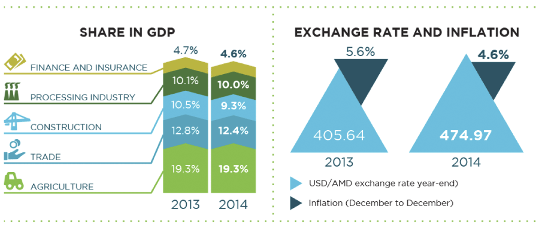
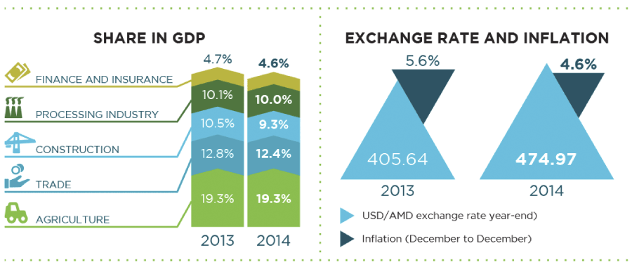
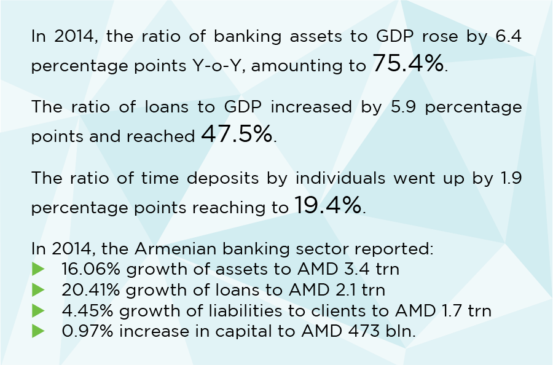
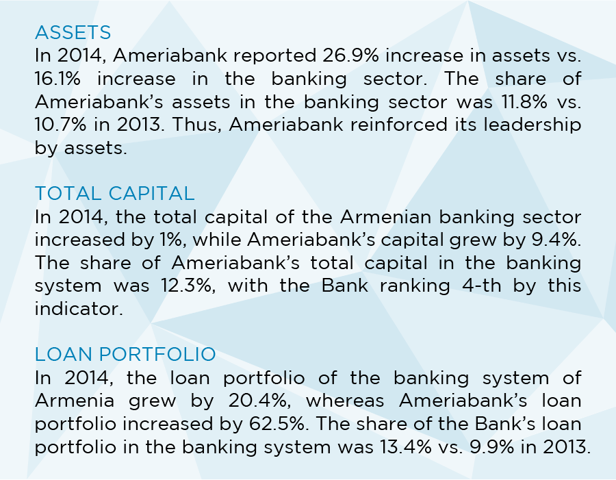

«Ամերիա» ընկերությունների խմբի անդամ Ամերիաբանկը ՀՀ առաջատար բանկերից է, որն ունի բանկային ոլորտի ցուցանիշները գերազանցող դինամիկ աճի ցուցանիշներ: Ամերիաբանկն ամփոփեց 2014թ. որպես օրինակելի առաջընթացի ևս մեկ տարի՝ բանկային համակարգում զբաղեցնելով 1-ին դիրքն ըստ ակտիվների, պարտավորությունների, հաճախորդներին տրված վարկերի և զուտ շահույթի: Նմանատիպ առաջատար դիրքերը ևս մեկ անգամ վկայում են Ամերիաբանկի կողմից ստեղծված մի բացառիկ միջավայրի մասին, որտեղ հաճախորդներն ու գործընկերները կարող են ոչ միայն վայելել բարձրակարգ սպասարկում և ստանալ անհատականացված բանկային ծառայություններ, այլ նաև օգտվել Բանկի մշտական աճի ստեղծած հնարավորություններից: Ամերիաբանկը Հայաստանի այն սակավաթիվ բանկերից է, որը մատուցում է ՄԱՆՐԱԾԱԽ, ԿՈՐՊՈՐԱՏԻՎ և ՆԵՐԴՐՈՒՄԱՅԻՆ բանկային ծառայությունների ամբողջական փաթեթ:
Խորհրդի նախագահի ուղերձը
Հարգելի' հաճախորդներ, բաժնետերեր և գործընկերներ,
2014 թ. մենք գրանցել ենք աննախադեպ արդյունքներ՝ դառնալով ՀՀ բանկային համակարգի բացարձակ առաջատարն ըստ հիմնական ֆինանսական ցուցանիշների՝ զուտ շահույթ, ընդհանուր ակտիվներ, հաճախորդներին տրված վարկեր, պարտավորություններ հաճախորդների նկատմամբ և ընդհանուր պարտավորություններ: Մշտապես հավատարիմ մնալով մեր որդեգրած սկզբունքներին՝ սպասարկման որակին, նորարարությանը և բաժնետիրական արժեքի ավելացմանը՝ մենք կարողացանք ապահովել կայուն և ողջամիտ հաշվեկշիռ՝ միաժամանակ մի քանի անգամ գերազանցելով բանկային համակարգի աճի հիմնական ցուցանիշները: Ամերիաբանկի դրամային զուտ շահույթն աճեց 18%-ով, մինչդեռ բանկային համակարգի միջին ցուցանիշը 41.3%-ով կրճատվեց: Կապիտալի եկամտաբերությունը նույնպես բարձր է՝ 17.8%՝ միջին շուկայական 5.6%-ի համեմատ: 2014թ. Ամերիաբանկը և FMO-ն (Նիդերլանդների զարգացման ֆինանսական ընկերություն) կնքեցին 20 մլն ԱՄՆ դոլարի չափով փոխարկելի ստորադաս փոխառության պայմանագիր. ՀՀ բանկային համակարգի պատմության մեջ առաջին անգամ է, որ հայկական բանկը փոխարկելի ստորադաս փոխառություն է ներգրավում միջազգային ֆինանսական կազմակերպությունից: Ակնկալում ենք, որ պարտքային կապիտալը կփոխարկվի ֆիքսված գնով բաժնետոմսերի արդեն 2015թ. ընթացքում: Իսկ ընդհանուր առմամբ, 2014թ. Ամերիաբանկն ապահովեց գործունեության անգերազանցելի ցուցանիշներ՝ ի հեճուկս մակրոտնտեսական զարգացումների և 4-րդ եռամսյակում տեղի ունեցած կարգավորող դաշտի փոփոխությունների:
Ըստ մակրոտնտեսական ցուցանիշների՝ 2014թ. նախորդ տարվա համեմատ ՀՀ-ն ապահովեց ՀՆԱ-ի աճի բավականին բարձր ցուցանիշ՝ 3.4%, որը վկայում է ՀՀ տնտեսության որոշակի դիմացկունության մասին անգամ առևտրային գործընկեր երկրներում տիրող իրավիճակի և ՀՀ դրամի արժեզրկման պայմաններում: 2014 թ. ՀՀ դրամն արժեզրկվեց ԱՄՆ դոլարի նկատմամբ 17%-ով՝ զգալիորեն ազդելով սպառողների վարքագծի վրա: Վերոնշյալը հաշվի առնելով՝ մենք վերանայել ենք ռիսկերի կառավարման մեր մեխանիզմներն ու չափանիշները: Ուշագրավ է, որ բանկի ակտիվները չեն տուժել դրամի արժեզրկումից: Ունենալով ամենախոշոր վարկային պորտֆելը շուկայում` ըստ չաշխատող վարկերի ցուցանիշի Ամերիաբանկը լավագույնների հնգյակում է:
Արժեզրկմանը զուգահեռ՝ 2014թ. դեկտեմբերին ՀՀ ԿԲ-ն վերանայեց բանկերի նվազագույն ընդհանուր կապիտալի նորմատիվը՝ սահմանելով այն 30 մլրդ ՀՀ դրամ գործող 5 մլրդ ՀՀ դրամի փոխարեն: 2017թ. հունվարի 1-ից ուժի մեջ մտնող այս փոփոխությունն ուղղված է ազատական, բայց միևնույն ժամանակ խիստ կարգավորվող բանկային համակարգի կայունության և թափանցիկության ապահովմանը: Ի դեպ, այս պահին 21 բանկերից ընդամենը հինգն են ապահովել 30 մլրդ ՀՀ դրամ սահմանաչափի պահանջը և Ամերիաբանկն այդ հինգից մեկն է: Մեզ համար սա գրավիչ հնարավորություն է ոչ օրգանական աճի տեսանկյունից: Ցանկանում եմ նաև շեշտել մեր ձեռքբերումները կորպորատիվ կառավարման ոլորտում: Ամերիաբանկը մշտապես եղել և մնում է հավատարիմ կորպորատիվ կառավարման ամենաբարձր չափանիշներին: Մենք վստահ ենք, որ փոխարինելիության արդյունավետ պլանավորումն ապահովում է ռիսկերի նվազեցում և կառավարման արդյունավետություն: Այսպիսով` 2014թ. ես եկա փոխարինելու Ռուբեն Վարդանյանին Ամերիաբանկի Տնօրենների խորհրդի նախագահի պաշտոնում, իսկ նա մնաց թիմի կազմում որպես խորհրդի անդամ՝ շարունակելով ներդնել իր հարուստ փորձն ու գիտելիքը, ինչպես նաև առաջնորդական հմտությունները բանկի զարգացման գործում: Մենք շարունակաբար ընդլայնում ենք մեր ռիսկերի կառավարման համակարգը: 2014թ. մենք ակտիվորեն աշխատեցինք բանկի կորպորատիվ կառավարման համակարգի բարելավման ուղղությամբ՝ մշակելով կանոնակարգող փաստաթղթեր Տնօրենների խորհրդին առընթեր այնպիսի կոմիտեների համար, ինչպիսիք են աուդիտի կոմիտեն, ռիսկերի կառավարման կոմիտեն, վարձատրության և առաջխաղացման կոմիտեն, ինչպես նաև գործարար էթիկայի սկզբունքները և աշխատակիցների վարքականոնը: Նշված բոլոր փաստաթղթերն ուժի մեջ են մտնելու 2015թ.-ից: Սա ևս մեկ կարևոր քայլ է մեր թիմային և հաճախորդամետ կորպորատիվ մշակույթն ամրապնդելու ուղղությամբ: Մենք շարունակեցինք խոշոր ներդրումներ ուղղել անձնակազմի զարգացմանը, աշխատաշուկայի լավագույն մասնագետների բացահայտմանը:
Նայելով առաջ՝ հետագայում ևս մենք մտադիր ենք շեշտը դնել մեր մրցակցային առավելությունների վրա՝ նպատակ ունենալով ամրապնդել մեր առաջատար դիրքերը շուկայի բոլոր հատվածներում և շարունակել ապահովել բարձր ֆինանսական ցուցանիշներ ինչպես 2015թ., այնպես էլ հետագայում: Վստահ եմ, որ շարունակական գերազանցությանն ուղղված մեր ջանքերը կօգնեն մեզ պահպանել առաջատարի մեր դիրքը և ապահովել ինչպես օրգանական, այնպես էլ անօրգանական աճ՝ ի հեճուկս հեղհեղուկ մակրոտնտեսական միջավայրի:
Եզրափակելով խոսքս՝ ցանկանում եմ իմ երախտագիտության խոսքերն ուղղել մեր բոլոր հաճախորդներին, գործընկերներին, բաժնետերերին, խորհրդի անդամներին, մեր բանկի ղեկավարությանը և, իհարկե, մեր Թիմին, քանի որ նրանց բոլորի միասնական ջանքերի շնորհիվ է, որ մենք կարողացանք հաջողությամբ հաղթահարել ներկայիս առաջատարի դիրքին հասնելու դժվարին ուղին:
ԳԼԽԱՎՈՐ ՏՆՕՐԵՆԻ ՈՒՂԵՐՁԸ
2014թ. մեր ցուցանիշները և դիրքը շուկայում վկայում են վերջին 7 տարիների ընթացքում մեր կողմից որդեգրված ռազմավարության և գործարար մոդելի կայունության մասին: Մեր արձագանքը շուկայի տատանումներին եղել է հետևողական, բայց միաժամանակ նաև ճկուն, և հենց դրա շնորհիվ է, որ մենք կարողացել ենք ճիշտ օգտվել շուկայի ազդակներից՝ ապահովելով զուտ շահույթի 18% աճ և բաժնետիրական կապիտալի 17.8% եկամտաբերություն: Մեր արդյունքները վկայում են այն մասին, որ չնայած ֆինանսական հատվածի դանդաղ աճի միտումներին, մենք կարողացել ենք պահպանել կայուն հաշվեկշիռ, ծախսերի կառավարման կենսունակ մեխանիզմներ, շահութաբերության աճ՝ այդպիսով նվաճելով և պահպանելով մեր հաճախորդների ու գործընկերների շարունակական վստահությունը:
Ձեր ուշադրությանն եմ ներկայացնում 2014թ. մեր գործունեության արդյունքները և ձեռքբերումները՝ հատուկ առանձնացնելով շարունակական աճին և հաջողությանը նպաստող մի շարք կարևոր գործոններ:
Շուկայի ցուցանիշը գերազանցելու ձգտում
Գրանցելով բարձր արդյունքներ՝ մենք դարձանք շուկայի առաջատարն ըստ զուտ շահույթի, ակտիվների, վարկային պորտֆելի, պարտավորությունների և հաճախորդների ավանդների: Առաջին տեղում լինելը հաճելի է, բայց միևնույն ժամանակ պարտավորեցնող՝ պահպանելու դիրքերը և չափանիշ սահմանելու շուկայի մնացած 20 մասնակիցների համար: Մեր շուկայական դիրքն առավելապես հիմնված է մեր բանկի գործունեության առանցքը կազմող զարգացած մանրածախ և կորպորատիվ գործունեության վրա, և մենք հաստատակամ ենք և նպատակաուղղված՝ այն պահպանելու գործում:
Մենք հավատարիմ ենք մնում մեր ռազմավարական նպատակին՝ դառնալ իրապես ունիվերսալ բանկ՝ դիվերսիֆիկացված վարկային պորտֆելով և եկամտի աղբյուրներով: Շնորհիվ մի շարք արշավների և նոր ծառայությունների/լուծումների ներդրման` մեր ՓՄՁ վարկային պորտֆելի տարեկան աճը կազմեց 73.2%, մանրածախ վարկերինը՝ 37.7%: Ուշագրավ է, որ չնայած մեր վարկային պորտֆելն ամենամեծն է շուկայում, մեր չաշխատող վարկերը կազմում են ընդամենը 3.1%, մինչդեռ 2014թ. բանկային համակարգի միջին ցուցանիշը եղել է 7.9%: Այս ցուցանիշով բանկը գտնվում է լավագույնների հնգյակում: Մենք նաև մշտապես ձգտում ենք բարձրացնել արդյունավետությունը և ներդրողների եկամտաբերությունը. այսպիսով՝ մեր կապիտալի եկամտաբերությունը կազմել է 17.8%, ինչպես նախատեսված էր տարեկան ռազմավարական նպատակներով: Ընթացիկ կարևորագույն խնդիրներից է նաև ծախսերի վերահսկման բարելավումը և ծախսեր/եկամուտ հարաբերակցության նվազեցումը: Մեզ հաջողվել է ապահովել ծախսեր/եկամուտ հարաբերակցության շուկայական 49.4% ցուցանիշից զգալիորեն ցածր մակարդակ:
Միջազգային ֆինանսական կազմակերպություններից (ՄՖԿ) և ոչ ռեզիդենտ բանկերից ներգրավված միջոցները հասել են 373 մլն ԱՄՆ դոլարի (ներառյալ Առևտրի ֆինանսավորման ծրագիրը). սա Ամերիաբանկի և ՄՖԿ-ների միջև ստեղծված երկարաժամկետ կայուն գործընկերության և վստահության հերթական ապացույցն է: Ուշագրավ է այն փաստը, որ Հայաստանի բանկային համակարգի համար մեկ բանկի հաշվով նման ծավալն աննախադեպ է: 2014թ. մենք կնքեցինք ֆինանսական միջոցների ներգրավման մի շարք խոշոր գումարով պայմանագրեր Վերակառուցման և զարգացման եվրոպական բանկի (EBRD) (10 մլն ԱՄՆ դոլար), Առևտրի և զարգացման սևծովյան բանկի (BSTDB) (10 մլն ԱՄՆ դոլար) և Նիդերլանդների զարգացման ֆինանսական ընկերության (FMO) հետ (20 մլն ԱՄՆ դոլարի փոխարկելի ստորադաս փոխառություն):
2014թ. բանկի ակտիվների աճը կազմեց 26.9%, վարկերինը՝ 62.5% (այդ թվում՝ լիզինգը և ֆակտորինգը), պարտավորություններինը՝ 29.3%, իսկ հաճախորդների նկատմամբ ունեցած պարտավորություններինը՝ 22.8%` գերազանցելով շուկայական ցուցանիշները, որոնք համապատասխանաբար կազմել էին 16.1%, 20.4%, 18% և 4.45%:
Զարգացում նորարարության միջոցով
Ամերիաբանկում մենք մշտապես ձգտում ենք ներդնել ամենաժամանակակից տեխնոլոգիաները և նորամուծությունները՝ նպատակ ունենալով ապահովել սպասարկման ամենաբարձր որակը: Այս մասին վկայում է գերմանական TÜV Rheinland ընկերության կողմից 2009թ. Ամերիաբանկին ISO 9001:2008 որակի կառավարման վկայականի շնորհումը և հետագա տարիներին վերջինիս վերահաստատումը: 2014թ. գործարկվեց Ամերիաբանկի շուրջօրյա կոնտակտային կենտրոնը, ինչպես նաև ընդլայնվեց և հեշտացվեց ինտերնետ-բանկ համակարգի հասանելիությունը «Մոբայլ Բանկինգ» ծառայության ներդրման միջոցով: Մենք նաև մեր հաճախորդներին առաջարկում ենք առևտրային և բրոքերային գործառնությունների մրցակցային հարթակներ, որոնք հնարավորություն են ընձեռում գործառնություններ իրականացնել ամբողջ աշխարհի շուկաներում: 2014թ. մարտին «Երևան Մոլ» առևտրի նորաբաց կենտրոնում կայացավ Ամերիաբանկի «Արշակունյաց» մասնաճյուղի բացման հանդիսավոր արարողությունը: Մասնաճյուղում գործարկվեց կանխիկ գումարի մուտքագրման առաջին բանկոմատը, որը հատուկ ներդրվել է մանրածախ հաճախորդներին արագ ինքնասպասարկման հնարավորություն ընձեռելու նպատակով:
Գնահատումը որպես ուղենիշ
Որպես իսկական հաճախորդամետ բանկ` մենք NPS տեխնոլոգիայի միջոցով մշտապես հետևում ենք հաճախորդների բավարարվածության մակարդակին, որը տարեցտարի աճում է, և ուրախ ենք, որ մեր հաճախորդների բավարարվածության մակարդակը ծառայությունների տեսականու և սպասարկման որակի նկատմամբ շարունակաբար աճում է:
Մենք շարունակում ենք ֆինանսական և մասնագիտական ներդրումներ կատարել հաճախորդների հետ փոխհարաբերությունների կառավարման CRM համակարգում: Շնորհիվ սպասարկման որակի բարելավմանը և շուկայական դիրքի ամրապնդմանն ուղղված մեր մշտական ջանքերի՝ Ամերիաբանկը ՀՀ բանկային շուկայի առաջատարն է ըստ բրենդի ճանաչելիության, որի մասին են վկայում «Ամերիա» խորհրդատվական ծառայության կողմից անցկացվող տարեկան հարցումները:
Ամերիաբանկն այս տարի երրորդ անգամ արժանացավ Euromoney միջազգային հեղինակավոր ամսագրի «Հայաստանի լավագույն բանկ 2014» գերազանցության մրցանակին և 4-րդ անգամ` Global Finance ամսագրի «Տարվա լավագույն բանկ» մրցանակին և «Առևտրի ֆինանսավորման ոլորտում լավագույն բանկ» մրցանակին: Բանկը ստացել է նաև ՎԶԵԲ-ի «Տարվա լավագույն գործարք» մրցանակը:
Համախմբելու, մարտահրավեր նետելու և կայանալու ունակություն
Մենք վստահ ենք, որ մեր հաջողության հիմնաքարը եռանդուն և իրենց գործին նվիրված մասնագետներից բաղկացած մեր Թիմն է` մարդիկ, որոնք աշխատում են հաճույքով ու մեծ նվիրումով և հպարտ են Երազանքի թիմի մասնիկը լինելու համար: Ուստի մենք ջանք չենք խնայում զանազան կրթական և ուսումնական ծրագրերի միջոցով մեր անձնակազմի զարգացումն ապահովելու համար: Այդ նպատակով Բանկում գործում է լիարժեք ուսումնական կենտրոն, մենք նաև նախաձեռնել ենք նորավարտ մասնագետների համար «Ամերիա սերունդ» խորագրով ծրագիրը: Վերջինիս շրջանակներում դիմորդների հսկայական զանգվածից ընտրվում են տաղանդավոր և խոստումնալից երիտասարդներ, որոնք մասնագիտական զարգացման հետագա ճանապարհն անցնում են Ամերիաբանկում: Մենք ստեղծել ենք կորպորատիվ մշակույթ, որով խրախուսվում են ինքնազարգացումը և նախաձեռնողականությունը: Բանկն իր անձնակազմի համար սահմանել է աննախադեպ արտոնություններ, հատկապես այն աշխատակիցների համար, որոնք կիսամյակային գնահատման ընթացքում ցուցաբերում են բարձր արդյունքներ:
Հետադարձ հայացք նետելով՝ ես հպարտ եմ արձանագրել այն արդյունքները, որոնց կարողացել ենք հասել: Գործարար ոգին Ամերիաբանկի կորպորատիվ մշակույթի հիմնաքարն է և մեր ամենաուժեղ ակտիվներից մեկը, որի շնորհիվ մենք կարողացել ենք ստեղծել հզոր բրենդ, որը դժվար կլինի կրկնել և գրեթե անհնար գերազանցել: Նմանօրինակ բարձունքների հասնելն իր հերթին ստեղծում է մի նոր և շատ կարևոր խնդիր՝ դիվերսիֆիկացնել վարկային պորտֆելը և եկամտի աղբյուրները, տեղական և տարածաշրջանային կլանումների միջոցով ընդլայնել ներկայությունը:
Երախտիքի խոսք և հետագա ծրագրեր
Մենք անհամբեր սպասում ենք հերթական հետաքրքիր և բեղուն աշխատանքային տարվան: Դեռևս մի քանի տարի առաջ որդեգրված մեր հիմնական ռազմավարական ծրագրերը գնալով թափ են հավաքում: Անցած տարի բանկն արձանագրել է զգալի աճ, բայց առաջիկայում մենք դեռ շատ անելիքներ ունենք` Ամերիաբանկի ողջ ներուժն օգտագործելով: Մենք վստահ ենք, որ ունենք ուժեղ մրցակցային դիրք, և շարունակ ձգտում ենք բաժնետերերին, վարկատուներին, հաճախորդներին և անձնակազմին մատուցել արժեք:
Ես պատիվ ունեմ իմ երախտիքի խոսքն ուղղելու իսկական պրոֆեսիոնալներից և վառ անհատականություններից բաղկացած մեր թիմի յուրաքանչյուր անդամին: Շնորհակալություն եմ հայտնում նաև մեր հաճախորդներին, գործընկերներին, մատակարարներին և բոլոր մյուս շահառուներին իրենց ցուցաբերած վստահության և հավատարմության համար, որի շնորհիվ մենք շարունակաբար ընդլայնում ենք մեր բիզնեսը և ամրապնդում առաջատարի մեր դիրքերը: Շնորհակալ ենք մեր բաժնետերերին և Խորհրդին` մշտական աջակցության, խրախուսման և բարի կամքի համար:
2007թ.-ից ի վեր «Ամերիա» ընկերությունների խումբը մատուցում է ֆինանսական և խորհրդատվական ծառայությունների լայն տեսականի ինչպես տեղական, այնպես էլ միջազգային շուկաներում: Խումբն ապացուցել է իր գերազանցությունը և ամրապնդել առաջատարի դիրքը ֆինանսական ցուցանիշներով, անհատական մոտեցումներով, համապարփակ լուծումներով, հաճախորդների բազայի բազմազանությամբ և բարձր եկամտային սեգմենտի հաճախորդների ընդարձակ ցանկով:
«Ամերիա» ընկերությունների խումբն ունի արդեն 17 տարվա պատմություն: Որպես Հայաստանում առաջին մասնագիտական խորհրդատվական ընկերություններից մեկը՝ «Ամերիա» ընկերությունների խումբը 1998թ.-ից ի վեր իր հովանու տակ է միավորում երիտասարդ, նվիրված և խոստումնալից փորձագետների: 1999 և 2007թթ. Ամերիան վերանայեց իր ծառայությունները՝ դրանք համալրելով իրավաբանական խորհրդատվական, հարկային խոխրհդատվություն, և ակտիվների կառավարման ծառայություններով: 2007թ. Ամերիան «Ամերիա Գրուպ Սի Ուայ Լիմիթեդ» (նախկին Թի Դի Էյ Հոլդինգս Լիմիթեդ) ընկերության հետ միասին սկսեց հայաստանյան զարգացող բանկային շուկայում ամենաագրեսիվ ընդլայնման արշավը: Նույն թվականին «Ամերիա Գրուպ Սի Ուայ» ընկերությունը ձեռք բերեց Հայներարտբանկի բաժնետոմսերի հիմնական փաթեթը, իսկ բանկը վերաբրենդավորվեց և վերանվանվեց Ամերիաբանկ: Հիմնական բաժնետիրոջ փոփոխությամբ նշանավորվեց բանկի զարգացման նոր փուլի մեկնարկը՝ նոր ռազմավարությամբ և կառավարման նոր սկզբունքներով: Այսօր «Ամերիա» խումբը Հայաստանում այն սակավաթիվ կազմակերպություններից է, եթե ոչ միակը, որ տրամադրում է ֆինանսական և խորհրդատվական ծառայությունների համապարփակ փաթեթ հետևյալ հիմնական ոլորտներում.
- Բանկային գործունեություն
- Ներդրումաբանկային գործունեություն և ակտիվների կառավարում
- Կառավարման խորհրդատվություն
- Իրավաբանական խորհրդատվություն
- Անշարժ գույքի զարգացում և ֆինանսավորում:
Ամերիան Հայաստանում իրավաբանական և կառավարման խորհրդատվության ոլորտի առաջատարներից է, որը մատուցում է բազմակողմանի ծառայությունների ամբողջական փաթեթ մեկ խորհրդատվական թիմի ներքո: Մեր խորհրդատուների ունիվերսալ թիմը տրամադրում է համակողմանի խորհրդատվական ծառայություններ, որի շնորհիվ հաճախորդի յուրաքանչյուր գործ վերլուծվում է միաժամանակ իրավաբանական, հարկային, ֆինանսական և կառավարչական տեսանկյուններից: Մեր խորհրդատվական ծառայությունները ներառում են իրավաբանական խորհրդատվություն (կորպորատիվ կառավարում, միաձուլումներ և ձեռքբերումներ, պետական բարեփոխումներ, հարկեր և մաքսատուրքեր և այլն), կորպորատիվ վերակազմավորում, զարգացում և ռազմավարություն, գործառնություններ և տեխնոլոգիաներ, համալիր կառավարչական լուծումներ և հետազոտություններ և այլն:
Ամերիա Ասեթ Մենեջմենթ ընկերության ներքո «Ամերիա» խումբը կենտրոնացրել է ակտիվների կառավարման հմտություններն ու հնարավորությունները: Մեր պորտֆելների կառավարման թիմը առաջիններից մեկը Հայաստանում ներդրեց փայատիրական հիմնադրամներ և մինչ օրս հաջողությամբ իրականացնում է դրանց կառավարումը: Ակտիվների կառավարման մեր մոդելի հիմքում ընկած է նորարարությունը: Այնպիսի երկրում, ինչպիսին Հայաստանն է, որտեղ ակտիվների կառավարման ծառայությունների պահանջարկը փոքր է, այնուհանդերձ, մեզ հաջողվել է մշակել այնպիսի պրոդուկտներ, որոնք ոչ միայն մրցունակ են ավանդաբար մանրածախ ներդրումների գերակշիռ մասը կազմող բանկային ավանդների հետ, այլ մասամբ նույնիսկ կլանում են դրանց մասնաբաժինը:
2011թ.-ից Սփյուռքի համայնքը հնարավորություն ստացավ օգտվել Սփյուռքի ներդրողների համար Հայաստանի խոստումնալից բիզնեսը և ներդրումային հնարավորությունները բացահայտող խորհրդատվական ծառայություններից: Լինելով «Ամերիա» խմբի ներկայացուցչական գրասենյակը Լոս Անջելեսում (ԱՄՆ)՝ Ամերիա Գրուպ Ինքը ծառայում է որպես կամուրջ Հայաստանի և Սփյուռքի միջև՝ տրամադրելով պրոֆեսիոնալ ծառայություններ, հատկապես՝ իրավաբանական, կառավարման խորհրդատվության, միաձուլումների և ձեռքբերումների, բաժնային ֆինանսավորման ոլորտներում:
Փրոփերթի Դիվելոփմենթ Քամփնի-ն (Prodeco), իրականացնում է ներդրումներ անշարժ գույքի շուկայում և մատուցում շինարարական աշխատանքների կառավարման և վերահսկման ծառայություններ: Ընկերության գործունեության հիմքում ընկած է հեռանկարային մոտեցումը՝ ուղղված կայուն զարգացմանը և շենքերի նախագծման ժամանակ նորագույն տեխնոլոգիաների կիրառմանը: Ներկայումս ընկերությունն իրականացնում է ժամանակակից Երևանի ամենահին շենքերից մեկի վերակառուցման նախագիծը՝ միաժամանակ կառուցելով Հայաստանում առաջին «կանաչ» բազմաֆունկցիոնալ բիզնես կենտրոնը: Այս նախագծի իրականացման համար ռազմավարական ներդրողները (Միջազգային ֆինանսական կորպորացիա՝ ՄՖԿ և Գերմանական ներդրումների և զարգացման ընկերություն՝ DEG) տրամադրել են 18 մլն ԱՄՆ դոլարի ֆինանսավորում:
«Ամերիա» խմբի ամենադինամիկ և կայուն աճ արձանագրող ընկերություններից է Ամերիաբանկը՝ ունիվերսալ բանկ, որը մատուցում է կորպորատիվ, ներդրումային և մանրածախ բանկային ծառայությունների ամբողջական փաթեթ: Մենք որդեգրել ենք մի շարք հիմնարար սկզբունքներ, որոնցից են անհատական մոտեցումը յուրաքանչյուր հաճախորդին և նորարարությունը՝ համատեղված բարձր պրոֆեսիոնալիզմի և փորձի հետ, և այս ամենը՝ միասնական երազանքի թիմում: Այս մոտեցումը դարձավ մեր հաջողության բանալին՝ թույլ տալով Ամերիաբանկին դառնալ հայկական բանկային համակարգի առաջատարներից մեկը:
«Ամերիա» խմբի ամենադինամիկ և կայուն աճ արձանագրող ընկերություններից է Ամերիաբանկը՝, ունիվերսալ բանկ, որը մատուցում է կորպորատիվ, ներդրումային և մանրածախ բանկային ծառայությունների ամբողջական փաթեթ: Մենք որդեգրել ենք մի շարք հիմնարար սկզբունքներ, որոնցից են անհատական մոտեցումը յուրաքանչյուր հաճախորդին և նորարարությունը՝ համատեղված բարձր պրոֆեսիոնալիզմի և փորձի հետ, և այս ամենը՝ միասնական երազանքի թիմում: Այս մոտեցումը դարձավ մեր հաջողության բանալին՝ թույլ տալով Ամերիաբանկին դառնալ հայկական բանկային համակարգի առաջատարներից մեկը:
1910 թվականին Տեր-Ղուկասյան փողոցում կառուցվեց Թիֆլիսի առևտրային բանկի Էրիվանյան մասնաճյուղը: 1916թ. Թիֆլիսի առևտրային բանկը վերանվանվեց Կովկասյան բանկի:
Արխիվային տվյալները փաստում են, որ Հայաստանի առաջին հանրապետության տարիներին Հայաստան մուտք գործող դրամական հոսքերը հիմնականում անցնում էին Կովկասյան բանկի Էրիվանյան մասնաճյուղով:Հեղափոխական կոմիտեի 1920թ. դեկտեմբերի 18-ի որոշմամբ Հայաստանի տարածքում գործող մասնավոր բանկերն ազգայնացվեցին, և 1922թ. մարտի 24-ին հիշյալ շենք տեղափոխվեց Հայաստանի Պետական բանկը: Մինչ այդ՝ 1921թ. փետրվարից մինչև 1922թ. մարտը, շենքն զբաղեցնում էր Հայկական հեռագրային գործակալությունը: 1924թ. մարտին հիմնադրվեց Հայաստանի Կոմունալ բանկը, որը նույն թվականին սկսեց գործել Նալբանդյան 2 (նախկին Տեր-Ղուկասով փողոց) հասցեում:
1959թ. Կոմունալ բանկը լուծարվեց, և նրա ակտիվներն ու պարտավորությունները փոխանցվեցին Ստրոյբանկի հայաստանյան գրասենյակին, որը տեղակայված էր նույն վայրում՝ Նալբանդյան 2 հասցեում գտնվող պատմական բանկային շենքում: 1974 թ. նույն շենքում հիմնադրվեց ԽՍՀՄ Վնեշտորգբանկի հայաստանյան մասնաճյուղը, իսկ Ստրոյբանկի մասնաճյուղը տեղափոխվեց այլ տարածք: 1988թ. նույն շենքում ձևավորվեց ԽՍՀՄ Վնեշէկոնոմբանկի հանրապետական մասնաճյուղը, որը 1992թ. վերակազմակերպվեց և դարձավ Հայներարտբանկ: 1995թ. տեղի ունեցավ օտարերկրյա կապիտալի ներգրավում. բանկի բաժնետոմսերի հիմնական փաթեթը ձեռք բերվեց «Քոմփութրոն Ինդասթրիզ Իսթեբլիշմենթ» ընկերության կողմից:
2007թ. Հայներարտբանկի բաժնետոմսերի հիմնական փաթեթը ձեռք բերվեց «Թի Դի Էյ Հոլդինգս Լիմիթեդ» ընկերության կողմից: 2008թ. «Հայներարտբանկ» ՓԲԸ-ն վերանվեց «Ամերիաբանկ» ՓԲԸ:
2009թ. բանկը ստացավ ISO 9001:2008 որակի միջազգային չափանիշներին համապատասխանության վկայագիր:
- 2008թ. Ստեփանակերտում բացվեց Ամերիաբանկի առաջին մասնաճյուղը: Հետագայում բացվեց ևս 2 մասնաճյուղ՝ Հայաստանի լեռնահանքային արդյունաբերության կենտրոն Քաջարանում (Սյունիքի մարզ) և Երևանում («Կենտրոն» մասնաճյուղ), իսկ գլխամասային գրասենյակը տեղափոխվեց նոր տարածք:
- 2008թ. Ամերիաբանկը դարձավ Visa International-ի հիմնական անդամ և Հայկական ֆոնդային բորսայի անդամ:
- 2009թ. հուլիսին առևտրի ֆինանսավորման համաշխարհային ծրագրի (GTFP) շրջանակներում կնքվեց պայմանագիր ՄՖԿ-ի հետ:
- Նույն տարվա դեկտեմբերին կնքվեց պայմանագիր Հոլանդիայի զարգացման բանկի (FMO) և Գերմանական ներդրումների և զարգացման ընկերության (Deutsche Investitions und Entwicklungsgesellschaft mbH, DEG) հետ` փոքր և միջին ձեռնարկությունների վարկավորման նպատակով 30 մլն ԱՄՆ դոլարի ֆինանսավորում ներգրավելու վերաբերյալ:
- 2010թ. բանկն արժանացավ Կոմերցբանկի 2 մրցանակի` 2009թ. միջազգային գործառնությունների անթերի իրականացման և առևտրի ֆինանսավորման ոլորտում նշանակալից ձեռքբերումների համար:
- Financial Times-ի The Banker ամսագիրի կողմից Ամերիաբանկը ճանաչեց Հայաստանի տարվա լավագույն բանկ:
- Բանկը նաև արժանացավ Euromoney-ի «Հայաստանի տարվա լավագույն բանկ 2011» գերազանցության մրցանակին:
- Բացի դրանից, ՄՖԿ-ն Ամերիաբանկին շնորհեց «Առևտրի ֆինանսավորում 2010» մրցանակը` որպես առևտրի ֆինանսավորման համաշխարհային ծրագրի շրջանակներում Կովկասյան տարածաշրջանում ամենաակտիվ թողարկող բանկ:
Նորարարություն և ենթակառուցվածք
Բանկը բացեց 5 նոր մասնաճյուղ՝ 2-ը մարզերում («Դիլիջան» և «Վանաձոր») և 3-ը` մայրաքաղաքում («Կասկադ», «Կոմիտաս», «Մոսկովյան»):
Բանկը ԱՄՆ ՄԶԳ «Գործընկերներ հանուն ֆինանսական կայունության» ծրագրի շրջանակներում ներդրեց գնման պատվերի ֆինանսավորման ծառայությունը և ստացավ միջնաժամկետ և երկարաժամկետպետական (գանձապետական) պարտատոմսերի գործակալի կարգավիճակ:
2010թ. կնքվեց պայմանագիր Եվրասիական զարգացման բանկի (ԵԶԲ) հետ` փոքր և միջին ձեռնարկությունների ֆինանսավորման համար Ամերիաբանկին 30 մլն ԱՄՆ դոլարի վարկային գիծ տրամադրելու վերաբերյալ, ինչպես նաև 2 պայմանագիր Ասիական զարգացման բանկի (ԱԶԲ) հետ` մեկն առևտրի ֆինանսավորման համար, մյուսը՝ 20 մլն ԱՄՆ դոլարի վարկային պայմանագիր 5 տարի ժամկետով՝ փոքր և միջին ձեռնարկությունների ֆինանսավորման համար: Կոմերցբանկն Ամերիաբանկին տրամադրեց բանկային երաշխիք ՀՀ դրամով և առանց գրավի ու երաշխավորության վարկ` փոքր և միջին ձեռնարկությունների ֆինանսավորման համար:
- Բանկն արժանացավ հետևյալ մրցանակներին՝ Euromoney-ի «Հայաստանի տարվա լավագույն բանկ 2012»,
- գերազանցության մրցանակ երկրորդ տարին անընդմեջ Financial Times-ի The Banker ամսագրի կողմից՝ «Հայաստանի տարվա լավագույն բանկ 2013» մրցանակ,
- ՄՖԿ-ի՝ «Առևտրի ֆինանսավորման համաշխարհային ծրագրի շրջանակներում էներգախնայողության ապահովման տեսանկյունից տարվա լավագույն թողարկող բանկ» մրցանակ,
- ՎԶԵԲ-ի՝ «Հայաստանում առևտրի ֆինանսավորման ոլորտում տարվա լավագույն թողարկող բանկ 2012» մրցանակ,
- Կոմերցբանկի՝ «Առևտրի ֆինանսավորման ոլորտում լավագույն գործընկեր 2012», «Առևտրի ֆինանսավորման ոլորտում գերազանցության մրցանակ 2013», ինչպես նաև մրցանակ միջազգային վճարման հանձնարարականների անթերի կատարման համար, 2012թ.
- «Հայաստանում առևտրի ֆինանսավորման ոլորտում լավագույն բանկ» և «Հայաստանի տարվա լավագույն բանկ» մրցանակներ 2012 և 2013:/li>
- 2013թ. բանկը դարձավ ֆակտորների խոշորագույն միջազգային միության` «Ֆակտորզ Չեյն Ինթերնեշնըլ»-ի անդամ:
Նորարարություն և ենթակառուցվածք
- Բացվում է 2 մասնաճյուղ Երևանում («Շենգավիթ», «Սայաթ-Նովա»), «Ստեփանակերտ» մասնաճյուղը տեղափոխվում է նոր տարածք:
- Առաջին անգամ Հայաստանում բանկի հաճախորդներին առաջարկվում է ձեռք բերել ՀՀ՝ միջազգային շուկաներում շրջանառվող դոլարային անդրանիկ եվրապարտատոմսերը:
- Ներդրվում է VISA ինտերնետ էքվայրինգի ծառայությունը:
- ՎԶԵԲ-ն առաջին անգամ հայկական բանկին ի դեմս Ամերիաբանկի շնորհում է հաստատող բանկի կարգավիճակ միջազգային առևտրի աջակցման ծրագրի շրջանակներում:
Բանկը հատկացնում է 15 մլն ԱՄՆ դոլար Չարենցավանի պողպատաձուլական գործարանի վերականգնման համար` ՄՖԿ-ի առևտրի ֆինանսավորման համաշխարհային ծրագրի շրջանակներում: Կնքվում է վերականգնվող վարկային գծի պայմանագիր առևտրի ֆինանսավորման ծրագրի շրջանակներում և 20 մլն ԱՄՆ դոլարի վարկային պայմանագիր ԱԶԲ-ի հետ, 12 մլն ԱՄՆ դոլարի վարկային պայմանագիր ՎԶԵԲ-ի հետ, 15 մլն ԱՄՆ դոլարի վարկային պայմանագիր «Պրոպարկո» ֆրանսիական զարգացման գործակալության հետ և 15 մլն ԱՄՆ դոլարի վարկային պայմանագիր Ավստրիական զարգացման բանկի հետ: Առաջին անգամ Հայաստանում բանկը հաստատում է ակրեդիտիվ հայկական արտահանող ընկերության համար` հօգուտ խոշոր բանկային խմբի անդամ հանդիսացող ղազախական բանկի:
- Բանկն արժանացավ Euromoney-ի գերազանցության մրցանակին որպես «Հայաստանի տարվա լավագույն բանկ 2014»: Այս հեղինակավոր մրցանակը բանկին շնորհվեց երրորդ անգամ:
- Միջազգային Corporate Intl Magazine 2014 ամսագիրը Ամերիաբանկը ճանաչեց Հայաստանում 2013թ. ֆակտորինգային ծառայությունների ոլորտում լավագույն բանկ:
- 2014թ. Ամերիաբանկին շնորհվեցին ՎԶԵԲ-ի «Տարվա գործարք 2013» մրցանակն առևտրի աջակցման ծրագրի շրջանակներում, ինչպես նաև Global Finance-ի «Արտարժույթ փոխանակող լավագույն բանկ 2014»:
- «Հայաստանում առևտրի ֆինանսավորման ոլորտում լավագույն բանկ 2014»:
- «Հայաստանում տարվա լավագույն բանկ 2014» մրցանակը:
- Բանկը նաև ստացավ Կոմերցբանկի գերազանցության մրցանակը 2013թ. միջազգային վճարման հանձնարարականների անթերի կատարման համար:
- Գերմանական TÜV Rheinland ընկերությունը երկրորդ անգամ վերահաստատեց Ամերիաբանկին շնորհված՝ ISO 9001:2008 որակի կառավարման միջազգային չափանիշներին համապատասխանության վկայականը (2015թ. ապրիլին):
Նորարարություն և ենթակառուցվածք
- Բացվեց 2 մասնաճյուղ՝ «Արշակունյաց» մասնաճյուղը՝ էքսպրես սպասարկմամբ Երևանում, և «Կապան» մասնաճյուղը ՀՀ Սյունիքի մարզում:
- Գործարկվեց նորագույն տեխնոլոգիաներով հագեցած կոնտակտային կենտրոնը՝ ապահովելով վճարային քարտերի շուրջօրյա սպասարկում:
- 2014թ. Ամերիաբանկը դարձավ առաջին հայկական բանկը, որի հետ FMO-ն կնքեց փոխարկելի ստորադաս փոխառության պայմանագիր՝ 20 մլն ԱՄՆ դոլար ընդհանուր գումարով:
- Բանկը նաև կնքեց հոբելյանական 80-րդ գործարքը ՎԶԵԲ-ի առևտրի աջակցման ծրագրի շրջանակներում:
- Բանկի վարկային պորտֆելը համալրվեց նոր վարկերով՝ «Նորվիկ» ՈՒՎԿ վարկային պորտֆելի մի մասի ձեռքբերման հաշվին:
Մենք հպարտանում ենք մեր բաժնետերերի, հաճախորդների, աշխատակիցների և լայն հանրության համար օգտակար լինելու և նրանց շահերը հավասարակշռելու մեր ունակությամբ:
Մեր գործունեությունը հենվում է այնպիսի հիմնարար սկզբունքների վրա, ինչպիսիք են ազնվությունը, փոխվստահությունը և գործարար էթիկայի նորմերը, որոնք մեզ թույլ են տալիս հավուր պատշաճի սպասարկել ինչպես անհատներին, այնպես էլ ցանկացած մեծության բիզնես ունեցող իրավաբանական անձանց: Մեր ֆինանսական հզորությունը թույլ է տալիս երաշխավորել մեր հաճախորդների ֆինանսական միջոցների ապահովությունը: Մենք ստեղծել ենք աշխատատեղ 600-ից ավել մարդկանց համար և դարձել ենք երկրի առաջատար ֆինանսական կառույցներից և լավագույն գործատուներից մեկը` նպաստելով ՀՀ տնտեսության զարգացմանը: Միաժամանակ մենք ձգտում ենք կիսել և բազմապատկել մեր հաջողությունը և այդ նպատակով մշակել ենք կորպորատիվ սոցիալական պատասխանատվության հատուկ քաղաքականություն, որն ընդգրկում է այնպիսի ուղղություններ, ինչպիսիք են երեխաներիառաողջական խնդիրների լուծմանն աջակցելը, կրթությունը, համայնքային զարգացումը և Հայաստանի մշակութային ժառանգության պահպանումը և վերականգնումը:
Մեր կորպորատիվ սոցիալական պատասխանատվության գլխավոր սկզբունքներից մեկն է երկարաժամկետ փոխվստահելի համագործակցությունը որոշակի չափանիշների հիման վրա ընտրված հիմնադրամների հետ: Հավատարիմ մնալով պատասխանատվության և պրոֆեսիոնալիզմի մեր հիմնարար արժեքներին՝ մենք ձգտում ենք գտնել այնպիսի գործընկերներ, որոնք ապահովում են թափանցիկ գործունեություն և պատշաճ հաշվետվություններ, որոնք անհրաժեշտության դեպքում կարող են տրամադրվել բոլոր շահագրգիռ կողմերին: /p>
2014թ. հիմնական միջոցառումները
ԱՋԱԿՑՈՒԹՅՈՒՆ ԾԱՆՐ ՀԻՎԱՆԴՈՒԹՅՈՒՆՆԵՐՈՎ ՏԱՌԱՊՈՂ ԵՐԵԽԱՆԵՐԻՆ
2014թ. «Ամերիա» ընկերությունների խումբն արդեն 5-րդ անգամ անցկացրեց ավանդույթ դարձած ամանորյա բարեգործական աճուրդը, որի ողջ հասույթը կրկնապատկվեց «Ամերիա» խմբի կողմից և ուղղվեց քաղցկեղով և արյան հիվանդություններով տառապող երեխաների բուժմանը: Այս տարի աճուրդը կազմակերպվեց «Սպորտը կյանքի համար» խորագրի ներքո՝ համախմբելով հայտնի հայազգի և այլազգի մարզիկների, ովքեր նվիրաբերեցին իրենց ստորագրությամբ սպորտային իրեր: Աշխարհահռչակ մարզիկների միահամուռ մասնակցությունը խորհրդանշում է մեր կորպորատիվ արժեքներից կարևորագույնները՝ թիմային ոգին և միասնականությունը: Աճուրդի հասույթն «Ամերիա» խմբի կողմից կրկնապատկվելուց հետո կազմեց ավելի քան 62 մլն ՀՀ դրամ, որն ամբողջովին ուղղվեց երեխաների բուժմանը: Նշենք, որ նախորդ տարիներին հավաքագրվել էր՝ 2013թ. 31 մլն ՀՀ դրամ, 2012թ. 35 մլն ՀՀ դրամ, 2011թ. 19 մլն ՀՀ դրամ և 2010թ.՝ 21 մլն ՀՀ դրամ, և յուրաքանչյուր տարի կրկնապատկվել «Ամերիա» խմբի կողմից: ԱՃուրդի հասույթն ուղղվում է քաղցկեղով, արյան հիվանդություններով և պատանեկան իդիոպաթիկ արթրիտով տառապող երեխաներին, որոնք գրանցված են «Օգնենք հայ մանուկներին», «Նվիրիր կյանք» և «Երեխաներ առանց ցավի» հիմնադրամներում: 2014թ. առաջին անգամ ավանդական աճուրդից բացի կայացավ նաև առցանց աճուրդ, որին մասնակցեցին ոչ միայն «Ամերիա» խմբի գործընկերները և հաճախորդները, այլ նաև լայն հանրությունը:
Նշված 5 տարիների ընթացքում «Ամերիա» խմբի, մեր գործընկերների, հաճախորդների և աշխատակիցների կատարած նվիրաբերությունները կազմել են 364 մլն ՀՀ դրամ՝ օգնելով փրկել 135 երեխայի կյանք:
Բժշկական ենթակառուցվածքի բարելավում
2014թ. «Ամերիա» ընկերությունների խումբը նաև ֆինանսավորեց մեկ այլ կարևոր նախագիծ՝ ուղղված երեխաների բուժման որակի բարելավմանը: Մասնավորապես, «Ամերիա» խումբը նվիրաբերեց 21 մլն ՀՀ դրամ «Սբ. Աստվածամայր» բժշկական կենտրոնին՝ «Համիլթոն Մեդիքըլ» ընկերության արտադրության արհեստական շնչառության նորագույն ապարատի ձեռքբերման համար:
ԿՐԹՈՒԹՅՈՒՆ ԵՎ ՀԱՄԱՅՆՔԱՇԻՆՈՒԹՅՈՒՆ
«Հայաստանի մանուկներ» հիմնադրամի հետ մենք համագործակցում ենք 2010թ-ից: Իրականացնում ենք մի շարք ծրագրեր՝ ուղղված սոցիալապես խոցելի մարզային համայնքներում դպրոցների աջակցմանը: 2014թ. վերանորոգվեց Արմավիրի մարզի Հացիկ գյուղի միջնակարգ դպրոցի շենքը:
Կրթաթոշակներ տաղանդավոր հայ երեխաներին
Նպատակ ունենալով բարելավել Հայաստանում կրթության որակը և լավ ունակություններով օժտված երեխաներին իրենց ուսումը շարունակելու հնարավորություն տալ՝ «Ամերիա» խումբը համաֆինանսավորում է Դիլիջանի նորաբաց միջազգային դպրոցի կրթաթոշակային հիմնադրամը: Դիլիջանի միջազգային դպրոցը հանդիսանում է աշխարհի 14 երկրում դպրոցներ և ավելի քան 145 երկրում համագործակցության պայմանագրեր ունեցող United World Colleges (UWC) միջազգային ցանցի անդամ: UWC ցանցի աշակերտներն ընտրվում են ամբողջ աշխարհից՝ ելնելով նրանց անհատական նվաճումներից և ներուժից: 2014թ. «Ամերիա» խումբը Դիլիջանի միջազգային դպրոցի կրթաթոշակային հիմնադրամին տրամադրեց շուրջ 35 մլն ՀՀ դրամ:
«Հայաստան» համահայկական հիմնադրամ
«Հայաստան» համահայկական հիմնադրամի հետ մեր համագործակցությունն սկսվեց 2010թ.: Այդ ժամանակից ի վեր «Ամերիա» խումբն ամեն տարի իր ներդրումն է ունենում հիմնադրամի ավանդական հեռուստամարաթոններում: 2014թ. այն կազմեց 5 մլն ՀՀ դրամ: Հեռուստամարաթոնի նպատակն էր Վարդենիս-Մարտակերտ ճանապարհի կառուցման համար միջոցներ հավաքագրելը՝ Հայաստանի Հանրապետության հյուսիսային շրջանների ու Արցախի միջև հաստատուն ցամաքային կապ ստեղծելու նպատակով:
ՔԱՂԱՔԱՅԻՆ ԵՆԹԱԿԱՌՈՒՑՎԱԾՔԻ ԶԱՐԳԱՑՈՒՄ
Երևանում առաջին հեծանվակայանների բացումը և հեծանվային մարաթոնը
2014թ. ապրիլի 17-ին «Ամերիա» ընկերությունների խումբը կազմակերպեց «Կանաչ ուղի» հեծանվային մարաթոնը, որի նպատակն էր առողջ ապրելակերպի և Երևանում «կանաչ» երթևեկության խրախուսումը: Մարաթոնին մասնակցեց շուրջ 300 հոգի: Մարաթոնի շրջանակներում Երևանում բացվեցին առաջին հեծանվակայանները՝ 10-ը կենտրոնում և 8-ը` քաղաքի այլ հատվածներում: Միջոցառումն իրականացվեց «Ամերիա» խմբի գործընկեր կազմակերպությունների և Սիրողական հեծանվասպորտի և հեծանվային զբոսաշրջության ֆեդերացիայի աջակցությամբ:
2014թ. մենք շարունակում էինք աջակցել համայնքային զարգացման մի շարք ծրագրերի ՀՀ մարզերում, հատկապես այն մարզերում, որտեղ բանկն ունի մասնաճյուղեր: Մասնավորապես, բանկն աջակցում էր Կապանի, Իջևանի, Քաջարանի, Վանաձորի համայնքներին: Բացի դրանից, աջակցություն ցուցաբերվեց «Էրեբունի-Երևան» հիմնադրամին` մայրաքաղաքում մի շարք միջոցառումների կազմակերպման ընթացքում:
Հայկական մշակութային ժառանգության պահպանումը բանկի կորպորատիվ սոցիալական պատասխանատվության անբաժանելի մասն է կազմում, ուստի բանկը տրամադրեց 8 մլն ՀՀ դրամ Թբիլիսիի Սբ Գևորգ հայկական եկեղեցու վերականգնման աշխատանքների համար: Եկեղեցին որպես հոգևոր և մշակութային կոթող կարևոր դեր է խաղում Վրաստանի հայ համայնքի կյանքում:
Ավստրիական զարգացման բանկ (OeEB)
2013թ. կնքվեց 15 մլն ԱՄՆ դոլարի վարկային պայմանագիր՝ 8 տարի ժամկետով: Պայմանագրի շրջանակներում ստացված ֆինանսական միջոցներն ուղղվեցին Հայաստանում փոքր և միջին ձեռնարկությունների և վերականգնվող էներգետիկայի ֆինանսավորմանը:
Ամերիաբանկի և ԱԶԲ-ի համագործակցության մեկնարկն ազդարարվեց 2011թ.` վերականգնվող վարկ տրամադրելու մասին պայմանագրի կնքմամբ: Պայմանագրի շրջանակներում բանկին տրամադրված միջոցներն ուղղվեցին առևտրի զարգացմանը և Հայաստանի կայուն տնտեսական աճի ապահովմանը: Բանկին տրամադրվեց 20 մլն ԱՄՆ դոլարի վարկ` նախատեսված փոքր և միջին ձեռնարկությունների ֆինանսավորման համար: 2012թ. բանկի համար սահմանված առևտրի ֆինանսավորման սահմանաչափը եռապատկվեց` 3 մլն-ից հասնելով 9 մլն ԱՄՆ դոլարի:
Առևտրի և զարգացման սևծովյան բանկ (BSTDB)
Ամերիաբանկի և Սևծովյան բանկի համագործակցությունն սկսվեց 2014թ., երբ կնքվեց վարկային պայմանագիր՝ 6 տարի ժամկետով, որի շրջանակներում Ամերիաբանկին տրամադրվեց 10 մլն ԱՄՆ դոլարի վարկ՝ նախատեսված փոքր և միջին ձեռնարկությունների վարկավորման համար:
Սիթիբանկի հետ Ամերիաբանկը համագործակցում է մի քանի համաձայնագրերի շրջանակներում: Մասնավորապես, կնքվել են ընթացիկ դրամական հոսքերի կառավարման և առևտրի ֆինանսավորման սահմանաչափերի պայմանագրեր: 2011թ. համագործակցությունն ընդլայնվեց, և կնքվեց համաձայնագիր (CARTA Agreement (Continuing Agreement for Reimbursement of Trade Advances)) ներմուծման և արտահանման գործարքների ֆինանսավորման համար: Ամերիաբանկի համար սահմանված առևտրի ֆինանսավորման սահմանաչափը 2014թ. կրկնապատկվեց և դարձավ 8 մլն ԱՄՆ դոլար:
2011թ. Ամերիաբանկի և Կոմերցբանկի համագործակցությունը նշանավորվեց երկու աննախադեպ գործարքներով, որոնք նպաստեցին առևտրի ֆինանսավորման և փոքր ու միջին ձեռնարկությունների վարկավորման ընդլայնմանը` դրանով իսկ խթանելով երկրի ընդհանուր տնտեսական զարգացումը:
Մասնավորապես, Կոմերցբանկը հայկական բանկի ներկայացմամբ առաջին անգամ հաստատեց բանկային երաշխիքներ ՀՀ դրամով` 1515 մլն ՀՀ դրամ ընդհանուր ծավալով, որն ուղղված էր առևտրի ֆինանսավորմանը: ՀՀ ազգային արժույթով երաշխիքների տրամադրումը թույլ տվեց ընդլայնել Ամերիաբանկի հաճախորդների արտաքին առևտրային գործարքների ֆինանսավորումը: Երկրորդ գործարքը ևս նախադեպը չուներ. առաջին անգամ Կոմերցբանկը հայկական բանկի տրամադրեց խոշոր վարկ` առանց գրավի: Վարկային միջոցներն ուղղվեցին փոքր և միջին ձեռնարկությունների ֆինանսավորմանը և նպաստեցին հաճախորդների վարկավորման մրցունակ պայմանների ապահովմանը:
Բացի այդ, 2010թ.-ից ի վեր Ամերիաբանկը պարբերաբար արժանանում է Կոմերցբանկի տարատեսակ մրցանակների առևտրի ֆինանսավորման, միջազգային գործառնությունների և այլ ոլորտներում:
Գերմանական ներդրումների և զարգացման ընկերություն (DEG)
Բանկը սկսեց DEG-ի հետ համագործակցությունը 2009թ.` այս կազմակերպության և FMO-ի հետ համատեղ վարկային գծի պայմանագրի կնքմամբ: Հետագայում համագործակցությունը վերածվեց ռազմավարական գործընկերության, երբ 2012թ. նոյեմբերին ստորագրվեց 20 մլն ԱՄՆ դոլարի վարկային պայմանագիր: Վարկը տրամադրվել է 8 տարի ժամկետով և նախատեսված է Հայաստանում փոքր և միջին ձեռնարկությունների ֆինանսավորման համար: Այս համագործակցությունը համահունչ է բանկի ռազմավարությանը, համաձայն որի փոքր և միջին բիզնեսի ֆինանսավորումը վարկային քաղաքականության առաջնային ուղղություններից է: 2013թ. DEG-ի հետ համագործակցության շրջանակներում բանկին տրամադրված վարկային միջոցների ծավալը հասավ 35 մլն ԱՄՆ դոլարի:
Եվրասիական զարգացման բանկ (ԵԶԲ)
2010թ. բանկին տրամադրվեց 30 մլն ԱՄՆ դոլարի վարկային գիծ փոքր և միջին ձեռնարկությունների ֆինանսավորման համար:
Վերակառուցման և զարգացման եվրոպական բանկ (ՎԶԵԲ)
ՎԶԵԲ-ի հետ համագործակցությանը մեկնարկեց 2010թ., երբ ՎԶԵԲ-ն Ամերիաբանկին տրամադրեց 10 մլն ԱՄՆ դոլարի վարկային գիծ փոքր և միջին ձեռնարկությունների ֆինանսավորման համար: Դրան զուգահեռ ՎԶԵԲ-ը բանկին տրամադրեց նաև 2 մլն ԱՄՆ դոլարի սահմանաչափ առևտրի ֆինանսավորման համար, որն այժմ կազմում է 30 մլն ԱՄՆ դոլար 2014թ. ՎԶԵԲ-ի կողմից Առևտրի ֆինանսավորման ոլորտում Ամերիաբանկի հետ իրականացրած գործարքների ընդհանուր ծավալ հասավ շուրջ 72 մլն ԱՄՆ դոլարի: Արդեն կնքվել է 80-րդ հոբելյանական գործարքը ՎԶԵԲ-ի առևտրի աջակցման ծրագրի շրջանակներում, Բանկն առաջինն էր տեղական բանկային համակարգում, ով դեռևս 2013թ. ՎԶԵԲ կողմից ստացավ հաստատող բանկի կարգավիճակ, իսկ 2014թ. Ամերիաբանկն արժանացավ «Տարվա գործարք 2013» մրցանակին:
Միջազգային ֆինանսական կորպորացիա (ՄՖԿ)
Դեռևս 2009թ. մեկնարկած համագործակցությունը թույլ տվեց Ամերիաբանկին ընդլայնել վերականգնվող էներգետիկայի ոլորտի, մասնավորապես փոքր ՀԷԿ-երի ֆինանսավորումը, ինչպես նաև առևտրի ֆինանսավորման գործիքների զարգացման հնարավորությունները, ինչը նույնպես իր ներդրումն ունեցավ Բանկի՝ առևտրի ֆինանսավորման ոլորտում առաջատարի դիրքերի ձևավորման գործում:
ՄՖԿ-ի հետ հետագա համագործակցության շրջանակներում բանկին տրամադրվեց 15 մլն ԱՄՆ դոլարի վարկ` Հայաստանում վերականգնվող էներգետիկայի ոլորտի ֆինանսավորման համար: 2011թ. բանկի և ՄՖԿ-ի համագործակցությունը հասավ այնպիսի մակարդակի, որ ՄՖԿ-ն ավելացրեց բանկին տրամադրված` միջազգային առևտրի ֆինանսավորման սահմանաչափը` այն հասցնելով 40 մլն ԱՄՆ դոլարի: Ընդհանուր առմամբ, ՄՖԿ-ի հետ Ամերիաբանկի կողմից իրականացված գործարքներիընդհանուր ծավալը 2014թ. անցավ80 մլն ԱՄՆ դոլարը:
Բանկի և ՄՖԿ-ի արդյունավետ համագործակցության խոսուն ապացույցներն են ՄՖԿ-ի կողմից Բանկին առևտրի ֆինանսավորման ոլորտում շնորհված մրցանակները, մասնավորապես՝ «Առևտրի ֆինանսավորման համաշխարհային ծրագրի շրջանակներում ամենաակտիվ թողարկող բանկը Կովկասում»՝ 2011թ. (“Most active GTFP Issuing Bank in the Caucasus”) և 2012թ.՝ «Առևտրի ֆինանսավորման համաշխարհային ծրագրի շրջանակներում լավագույն թողարկող բանկը էներգախնայողության ապահովության տեսանկյունից Եվրոպայում և Կենտրոնական Ասիայում» (“Best GTFP Issuing Bank for Energy Efficiency” in Europe and Central Asia): ՄՖԿ-ն նաև ֆինանսավորում է«Կամար» բիզնես կենտրոնի շինարարությունը՝ տրամադրելով 9 մլն դոլարի վարկ սեփական միջոցներից, ինչպես նաև 9 մլն դոլար DEG-ից ներգրավված միջոցներից: Նախագծի ընդհանուր արժեքը կազմում է շուրջ 37 մլն ԱՄՆ դոլար, որի մնացած մասը ֆինանսավորվում է «Փրոփերթի Դիվելոփմենթ Քամփնի» ՓԲԸ-ն` սեփական միջոցների հաշվին:
2013թ. «Պրոպարկո» ֆրանսիական զարգացման գործակալությունը բանկի հետ կնքեց 15 մլն ԱՄՆ դոլարի վարկային պայմանագիր, որն ազդարարեց համագործակցության սկիզբը՝ դառնալով Պրոպարկոյի առաջին ներդրումը Հայաստանում և երկրորդը՝ Հարավային Կովկասում: Վարկը ստեղծեց գյուղատնտեսության և փոքր ու միջին վերամշակող ձեռնարկությունների ֆինանսավորման նոր երկարաժամկետ հնարավորություններ` նպաստելով տնտեսության զարգացմանը և ստեղծելով նոր աշխատատեղեր:
Հոլանդիայի զարգացման բանկ (FMO)
Ամերիաբանկն սկսեց համագործակցել FMO-ի հետ 2009թ-ին` ստորագրելով 30 մլն ԱՄՆ դոլարի վարկային պայմանագիր, որի նպատակն էր Հայաստանում փոքր և միջին ձեռնարկությունների և վերականգնվող էներգետիկայի ոլորտի ֆինանսավորումը, որը թույլ տվեց բանկին ընդլայնել ՓՄՁ-ների և փոքր հիդրո և հողմակայանների վարկավորման ծավալները:
Համագործակցությունը շարունակվեց նաև 2010թ., երբ Ամերիաբանկը FMO-ի և DEG-ի (Գերմանական ներդրումների և զարգացման ընկերություն) աջակցությամբ բարեհաջող կերպով ավարտեց էկոլոգիական և սոցիալական ռիսկերի կառավարման համակարգի ներդնումը: Նշենք, որ Ամերիաբանկը տարածաշրջանում առաջիններից էր, որ ներդրեց նման համակարգ՝ արժանանալով FMO-ի և DEG-ի գնահատանքի հավաստագրին և ստանալով 2009թ. դեկտեմբերին կնքված պայմանագրի շրջանակներում վարկի տոկոսադրույքի նվազեցում:
2014թ. Ամերիաբանկը և FMO-ն կնքեցին 20 մլն ԱՄՆ դոլարի փոխարկելի ստորադաս փոխառություն ներգրավելու մասին աննախադեպ պայմանագիր: Առաջին անգամ ՀՀ բանկային համակարգի պատմության ողջ ընթացքում միջազգային ֆինանսական կազմակերպությունը տրամադրեց փոխարկելի ստորադաս փոխատվություն հայկական բանկի: Սա խորհրդանիշն է միջազգային ներդրողների՝ ՀՀ բանկային համակարգի հանդեպ աճող վստահության:
Հայաստանի մակրոտնտեսական վիճակը բնութագրվում էր շարունակվող հետճգնաժամային վերականգնմամբ, որին հաջորդեցին Ռուսաստանի տնտեսական վիճակի վատթարացմամբ պայմանավորված նոր ճգնաժամի առաջին նախանշանները:
Ուշագրավ է, որ 2009թ. հաջորդած 5 տարվա աճից հետո 2014թ. իրական ՀՆԱ-ն վերջապես գերազանցեց նախաճգնաժամային մակարդակը 5.4%-ով: Չնայած դրան, սակայն, անվանական ՀՆԱ-ն դոլարային արտահայտմամբ 6.7%-ով զիջում է 2008թ. մակարդակին, ինչը պայմանավորված է վերջին 6 տարիների ընթացքում ՀՀ դրամի՝ ԱՄՆ դոլարի նկատմամբ 55% արժեզրկմամբ, որը միայն 2014թ. վերջին 2 ամսվա ընթացքում կազմեց 15%:
Վերջին 4 տարվա ընթացքում ամենաարագ աճող ոլորտներից էին ֆինանսական և ապահովագրական ծառայությունները, սակայն անգամ դրանք 2010-2013թթ. արձանագրված երկնիշ աճից հետո 2014թ. գրանցեցին աճի դանդաղ տեմպեր` մինչև 4.8%: Պատճառը դարձյալ նավթի գների անկումն էր և Ռուսաստանում տիրող իրավիճակը և որպես հետևանք՝ տրանսֆերտների ծավալի կտրուկ նվազումը: Այս ոլորտի աճը զսպող մեկ այլ գործոն է ՀՀ դրամի անկայունությունը (15% արժեզրկում 2014թ. վերջին 2 ամսվա ընթացքում):
Վերջին տարիների ընթացքում ՀՀ ձեռնամուխ է եղել երկրում ներդրումային և գործարար միջավայրի բարելավմանը: Արդյունքում` 2014թ. ՀԲ Doing Business 2015 զեկույցում Հայաստանը նախորդ տարվա համեմատ 4 կետով բարելավեց իր դիրքը՝ զբաղեցնելով 45-րդ հորիզոնականը:
 


ՀՀ բանկային համակարգը մեծ հետաքրքրություն է ներկայացնում արտասահմանյան ներդրողների համար: Այսպես` ՀՀ 21 բանկերից 19-ը օտարերկրյա մասնակցությամբ են, իսկ օտարերկրյա կապիտալի մասնաբաժինը բանկային համակարգի ամբողջ կապիտալում կազմում է 66.5%: Միջազգային ֆինանսական կառույցներից և արտասահմանյան բանկերից տնտեսության խթանման և համատեղ նախագծերի համար ներգրավվող երկարաժամկետ միջոցները ՀՀ բանկային համակարգի հանդեպ վստահության և հետաքրքրության ևս մեկ խոսուն ապացույց են:
- 2014թ. ակտիվների եկամտաբերությունը կազմել է 0.9%
2013թ. 1.7%-ի դիմաց:
- 2014թ. կապիտալի եկամտաբերությունը կազմել է 5.6%
2013թ. 10.7%-ի դիմաց:
- Ծախսերի և եկամուտների հարաբերությունը 2014թ. 49.4% էր՝
2013թ. 50.9%-ի դիմաց:
2014թ. վերջին օրը ՀՀ ԿԲ-ն բարձրացրեց բանկերի ընդհանուր կապիտալի նվազագույն շեմը մինչև 30 միլիարդ ՀՀ դրամ (62.5 միլիոն ԱՄՆ դոլարին համարժեք), որը բոլոր գործող բանկերի համար ուժի մեջ կմտնի 2017թ. հունվարի 1-ից: ՀՀ ԿԲ-ի տվյալ որոշումն ուղղված էր նախ և առաջ բանկային համակարգի երկարաժամկետ կայունության ապահովմանը և ֆինանսական միջնորդության զարգացմանը: Հայկական առևտրային բանկերից առայժմ միայն հինգն են ապահովել 30 միլիարդ ՀՀ դրամը գերազանցող կապիտալ: Այդ իսկ պատճառով, 2015-2016թթ. ակնկալվում են նոր կապիտալ ներդրումներ, նոր բաժնետերեր, բանկերի միաձուլումներ, ինչը կհանգեցնի բանկերի թվի նվազման: Տարբեր գնահատականներով ներկայիս 21 բանկերից ասպարեզում կմնան միայն 10-12-ը: Ըստ կանխատեսումների` 2015-2017թթ. Հայաստանի բանկային համակարգի աճը կտատանվի 10-15%-ի սահմաններում: Ակնկալվում է, որ դրամային ռեսուրսների տոկոսադրույքներն աճ կարձանագրեն, մինչդեռ արտարժույթով արտահայտված միջոցների տոկոսադրույքները կմնան համեմատաբար կայուն:

Չնայած բանկային համակարգի աճի ավելի դանդաղ տեմպերին՝ պայմանավորված ճգնաժամային երևույթներով, 2014թ. Ամերիաբանկը շարունակեց դինամիկ զարգացումը՝ առաջ անցնելով բանկային համակարգից գրեթե բոլոր հիմնական ցուցանիշներով: Ընդ որում, բոլոր հանգամանքներում և պայմաններում, որքան էլ կարևորվի էքստենսիվ աճը, Ամերիաբանկն իր գործունեության մեջ առաջնորդվում է նախ և առաջ ռիսկերի նվազեցմամբ, սպասարկման որակի բարձրացմամբ և հաճախորդների բավարարվածության ապահովմամբ: Որպես դինամիկ զարգացման նախապայման, Ամերիաբանկը կարևորում է որակի ապահովումը և կայունությունը, որոնցից բխում են բաժնետերերի, հաճախորդների և գործընկերների վստահությունը և ապահովությունը:
Ենթակառուցվածքի ընդլայնումը, տեխնոլոգիական բազան, միջոցների շահավետ տեղաբաշխման մատչելիությունը նպաստեցին Ամերիաբանկի վարկավորման ծավալի և ռեսուրսային բազայի ընդլայնմանը: 2014թ. ՀՀ բանկային համակարգի ընդհանուր ավանդներն աճեցին 4.45%-ով, իսկ Ամերիաբանկի ավանդները` 22.8%-ով: Ըստ հաճախորդներից ներգրավված միջոցների` բանկի մասնաբաժինը կազմել է 12.31%: Երկրորդ տարին շարունակ բանկը պահպանում է իր առաջատար դիրքերն ըստ հաճախորդներից ներգրաված միջոցների:
Բանկային համակարգի շահույթը 2014թ. արդյունքներով չնայած նվազել է ավելի քան 40%-ով, Ամերիաբանկի շահույթը դրամային արտահայտմամբ 18% աճ է արձանագրել, ինչի շնորհիվ բանկը դարձավ բանկային համակարգի առաջատարը շահույթի մեծությամբ, իսկ իր շուկայական մասնաբաժինն ըստ շահույթի կազմեց 26.3%:
Բանկի ակտիվների և կապիտալի շահութաբերությունը (ROA և ROE) նույնպես գերազանցում է միջին բանկային ցուցանիշները. ROA-ն կազմել է 2.1% ( բանկային ցուցանիշը՝ 0.9%), ROE-ն՝ 17.8% (բանկայինը՝ 5.6%):

2014թ. արդյունքներով Ամերիաբանկն առաջ անցավ այլ բանկերից չորս հիմնական ցուցանիշներով՝ ակտիվներով, պարտավորություններով, վարկերով և շահույթով:
2014թ. բանկի ակտիվները 26.9% աճ արձանագրեցին, և բանկը վերահաստատեց իր առաջատար դիրքը, որը զբաղեցնում էր 2013թ. 1-ին եռամսյակից ի վեր:
Ամերիաբանկը 21 բանկերի շարքում զբաղեցնում է 2-րդ դիրքն ըստ կանոնադրական կապիտալի (25,476 միլիոն դրամ)՝ մնալով երկրի ամենակապիտալացված բանկերից մեկը: 2014թ. բանկն ապահովեց ընդհանուր կապիտալի 9.4%-ով աճ շահույթի հաշվին: Հաշվետու տարվա արդյունքներով բանկի շահույթը կազմեց 7.1 մլրդ ՀՀ դրամ կամ 17.2 մլն ԱՄՆ դոլար: Այս ցուցանիշով բանկն զբաղեցրեց առաջատարի դիրքը ՀՀ բանկային համակարգում: 2014թ. բանկի ընդհանուր կապիտալը կազմեց 42.4 մլրդ ՀՀ դրամ կամ 89.2 մլն ԱՄՆ դոլար, ներառյալ կուտակված շահույթը` 17.2 մլրդ ՀՀ դրամ կամ 35.8 մլն ԱՄՆ դոլար: 2014թ. բանկի հաճախորդների բազան ավելացավ 22.5%-ով:
2014թ. տարեվերջի արդյունքներով Ամերիաբանկն առաջ է անցել բոլոր բանկերից չորս հիմնական ֆինանսական ցուցանիշներով: Այս արդյունքները ոչ միայն բանկի առաջատար դիրքի և վստահելիության ապացույցն են, այլ նաև հետագա զարգացման և կատարելագործման նշաձող:

Հատկանշական է, որ 2010թ-ից ի վեր յուրաքանչյուր տարի բանկը ճանաչվել է լավագույն բանկ կամ Euromoney պարբերականի կողմից՝ ստանալով Գերազանցության մրցանակը (2011, 2012, 2014), կամ Financial Times խմբի The Banker ամսագրի կողմից (2010, 2013): 2014թ. Ամերիաբանկը երրորդ անգամ արժանացավ Euromoney ամսագրի Գերազանցության մրցանակին` որպես տարվա լավագույն բանկ: Երեք տարի անընդմեջ՝ սկսած 2012թ-ից, Ամերիաբանկն արժանացել է Global Finance-ի մրցանակների մի քանի կարևոր անվանակարգերում, մասնավորապես, 2014թ. բանկը ստացավ հետևյալ մրցանակները՝ Հայաստանի լավագույն բանկ արտարժութային գործառնությունների ոլորտում, Հայաստանի լավագույն բանկ առևտրի ֆինանսավորման ոլորտում և Հայաստանի լավագույն բանկ: Ամերիաբանկը նաև ստացել է EMEA Finance ամսագրի Եվրոպայի բանկային մրցանակ 2014 մրցույթի լավագույն բանկ մրցանակը:
Որակի շարունակական բարձրացման ու վերահսկողության մեր ջանքերի շնորհիվ բանկը միջազգային կազմակերպությունների և գործընկերների մրցանակներին է արժանացել նաև գործառնական առանձին ոլորտներում. Հայաստանի լավագույն բանկ ֆակտորինգային ծառայությունների ոլորտում Corporate Intl Magazine ամսագրի կողմից 2014թ. Global Awards մրցանակաբաշխության ժամանակ (2013 ֆինանսական տարվա արդյունքներով), 2014թ. ՎԶԵԲ-ի «Տարվա գործարք 2013» մրցանակն առևտրի աջակցման ծրագրի շրջանակներում Կոմերցբանկի գերազանցության մրցանակը 2013թ. միջազգային վճարման հանձնարարականների անթերի կատարման համար:
Մանրածախ բանկային գործառնությունների շարունակական և դինամիկ աճն ու մանրածախ ոլորտում բանկի դիրքերի ամրապնդումն արդեն մի քանի տարի է, ինչ գտնվում են բանկի ուշադրության կենտրոնում` որպես առաջնահերթ ռազմավարական ուղղություն: Թիրախային մանրածախ բանկային պրոդուկտներ մշակելու և Ամերիաբանկը որպես զուտ կորպորատիվ բանկ ընկալելու կարծրատիպը կոտրելու մեր շարունակական ջանքերը անհատական մոտեցման հետ մեկտեղ բավականին արգասաբեր եղան: Չնայած դանդաղ տնտեսական աճին և 2014թ. վերջին ծառացած շուկայի մարտահրավերներին՝ բանկը բարելավել է իր դիրքը հիմնական ցուցանիշներով՝ դառնալով մանրածախ բանկային հատվածի առաջատարներից մեկը:
Նոր պրոդուկտներ և առաջարկներ
Արդեն մի քանի տարի է, ինչ բանկը որդեգրել է հաճախորդների ամեն մի սեգմենտի կարիքները բացահայտելու և համապատասխան լուծումներով հանդես գալու սկզբունքը՝ միաժամանակ յուրաքանչյուր հաճախորդին ցուցաբերելով անհատական մոտեցում: 2013թ. «Ամերիա Գործընկեր» և «Ամերիա Պրեմիում» բարձրակարգ հաճախորդների համար նախատեսված փաթեթները հաջողությամբ ներդնելուց հետո բանկը մշակեց և ներդրեց բանկային ծառայությունների երրորդ փաթեթը՝ հատուկ միջին դասի հաճախորդների համար: «Ամերիա Պերսոնա»-ն նախատեսված է այն հաճախորդների համար, ովքեր ակտիվորեն օգտվում են բանկային մի շարք ծառայություններից և իրենց ժամանակը խնայելու կարիք ունեն: «Խելացի» ծառայությունների այս փաթեթը ներառում է հաճախորդներին անհրաժեշտ բոլոր հիմնական բանկային ծառայությունները և հնարավորություն ընձեռում Ամերիաբանկից օգտվելիս և գործարքներ իրականացնելիս ստանալ հատուկ սակագներ և պայմաններ: Բացի հիմնական ծառայություններից, «Ամերիա Պերսոնա» հաճախորդներին կցվում է հաճախորդի անհատական մենեջերը, ով համակարգում է բոլոր խնդիրների լուծումը: Ավելին, հաճախորդները հնարավորություն ունեն նախապես հանդիպում նշանակել իրենց սպասարկող մենեջերի հետ` էապես խնայելով սեփական ժամանակը:
2014թ. ներդրվել է Հաճախորդների լոյալության ծրագրի առաջին փուլը, որը քարտապաններին հնարավորություն է տալիս բոնուսային միավորներ կուտակել քարտային գործարքներից և հետագայում օգտագործել դրանք արտոնյալ պայմաններով բանկային ծառայություններից օգտվելու համար: Բոնուսային միավորները տրամադրվում են նաև այլ հաճախորդների Ամերիաբանկ ուղղորդման, հավատարմության (Ամերիաբանկի հաճախորդը լինելու տարիների թիվ) դիմաց, տոնական և ծննդյան օրերին: Հաճախորդները հնարավորություն են ստանում օգտվելու տարբեր բանկային ծառայություններից մինչև 100% զեղչով: Լոյալության ծրագիրը գործում է նաև համատեղ քարտերի դեպքում, ինչը համատեղ քարտերի տերերին գերազանց հնարավորություն է ընձեռում օգտագործել կուտակված միավորները բանկի հետ համագործակցությունն ընդլայնելու համար (հաշիվների բացման, քարտերի ստացման, հեռակառավարման բանկային համակարգերից օգտվելու ժամանակ): Երկրորդ փուլի ժամանակ մենք նախատեսում ենք ներդնել համատեղ քարտերի լոյալության ծրագիրը՝ առաջարկելով կուտակված միավորների օգտագործման տարբեր ձևեր:
Սպասարկման դիվերսիֆիկացված ցանց
Բանկն ակտիվորեն զարգացնում է բանկային սպասարկման ուղիները: 2015թ. մեր առաջնահերթ նպատակներից մեկը հեռակառավարման բանկային համակարգերի համալիր փաթեթի մշակումն է: Արդեն իսկ ընթացքում են մի շարք բարդ նախագծեր, որնք նպատակ ունեն հզորացնելու բանկի սպասարկման ցանցի կարողությունները և հեռակառավարման բանկային համակարգերի հնարավորությունները : Մոբայլ սարքերի և բջջային հեռախոսների միջոցով բանկային սպասարկման ծառայության մշակումը բանկի ուշադրության կենտրոնում էր մի քանի տարի շարունակ և ամբողջությամբ կգործարկվի 2015թ.: 2014թ. իրականացվել են նաև հեռակառավարման բանկային համակարգերիզարգացման և բանկոմատների ու մասնաճյուղերի ցանցի ընդլայնման նախագծերը:
Հեռակառավարման բանկային համակարգերի զարգացման նախագծի շրջանակներում բանկը կատարելագործել է ինտերնետ-բանկինգ համակարգի հնարավորությունները՝ դրան զուգահեռ հատուկ սակագներ սահմանելով համակարգի միջոցով գործարքներ կատարող հաճախորդների համար:
2014թ. մարտին Ամերիաբանկը Երևանում բացեց «Արշակունյաց» մասնաճյուղը, որն իր գործունեությունը ծավալում է խոշոր առևտրային կենտրոնում: Դա բանկի առաջին մասնաճյուղն է երկար աշխատանքային գրաֆիկով, որը հաճախորդների համար առավելագույն հարմարություն ապահովելու նպատակով աշխատում է առավոտյան ժամը 10-ից մինչև երեկոյան ժամը 10-ը՝ շաբաթվա բոլոր օրերին: Նորաբաց մասնաճյուղում գործում են արագ գործարքների համար նախատեսված ինքնասպասարկման տերմինալներ: Մասնաճյուղն իր հարմարավետ դիրքի, մեծ տարածքի, ժամանակակից տեխնիկական հագեցվածության և պրոֆեսիոնալ անձնակազմի միջոցով ապահովում է սպասարկման բարձր որակ և հաճախորդների բավարարվածությունը: 2015թ. բանկը նախատեսում է մասնաճյուղ բացել Սյունիքի մարզի Կապան քաղաքում:
2014թ. Ամերիաբանկի գործող բանկոմատների թիվը կազմում էր 103: Բանկոմատների ցանցի ընդլայնումը սպասարկման որակի բարձրացմանը և հարմարության ապահովմանն ուղղված միակ քայլը չէր: Մենք կատարելագործել ենք բանկոմատների միջոցով սպասարկումը՝ տեղադրելով կանխիկի մուտքագրման հնարավորությամբ բանկոմատներ, և նախատեսում ենք կանխիկի մուտքագրման այլ տերմինալներ տեղադրել նաև 2015թ.:
Հաճախորդների բազա և ավանդներ
Հավատարիմ մնալով բարձրակարգ սպասարկում և ճկուն ու բարենպաստ պայմաններով բանկային ծառայությունների լայն տեսականի առաջարկելու իր քաղաքականությանը՝ բանկը հաճախորդների յուրաքանչյուր սեգմենտին առաջարկում է հատուկ այդ հատվածի համար մշակված ծառայություններ և նպատակային սպասարկում, ինչը հնարավորություն է տալիս բարձրացնել հաճախորդների բավարարվածության աստիճանը և հավատարմությունը: Արդյունքում` Ամերիաբանկի մանրածախ ֆիզիկական անձ հաճախորդների թիվն աճել է 23%-ով: Պրեմիում/Գործընկեր կարգավիճակ ունեցող հաճախորդների թիվը ևս աճել է շուրջ 25%-ով:
Դրան զուգահեռ զգալի աճել է նաև ավանդատուների թիվը, ինչի արդյունքում «Ամերիա Գործընկեր» և «Պրեմիում» հաճախորդների կողմից ներդրված ժամկետային ավանդների ծավալն ավելացել է 38%-ով:
Ֆիզիկական անձանցից ներգրավված ցպահանջ և ժամկետային ավանդների ծավալը տարվա կտրվածքով աճել է 25.7%-ով՝ 82.3 մլրդ ՀՀ դրամից մինչև 103.5 մլրդ ՀՀ դրամ:
Աշխատավարձային նախագծեր
Աշխատավարձային նախագծերի հետ կապված գործընթացների վերանայման արդյունքում մենք նվազագույնի ենք հասցրել նախագծի շուրջ բանակցելու և այն կազմակերպելու համար անհրաժեշտ ժամանակահատվածը: Միևնույն ժամանակ մենք ընդլայնել ենք աշխատավարձային նախագծերի շրջանակներում հաճախորդներին տրամադրվող ծառայությունների տեսականին և ավելի դյուրին ենք դարձրել սպասարկումը: Արդյունքում մենք արձանագրեցինք մեզ հետ համագործակցող ընկերությունների թվի աճ: Մասնավորապես, աշխատավարձային նախագծերի շրջանակներում բանկի ֆիզիկական անձ հաճախորդների թիվն ավելացավ 33.4%-ով, իսկ համագործակցող ընկերությունների քանակը՝ 22%-ով:
Մանրածախ վարկավորում
Հաճախորդների համար հարմար ու բարձրակարգ սպասարկում ապահովելու նպատակով Ամերիաբանկը շարունակում է կատարելագործել մանրածախ վարկավորման ընթացակարգերը: Բոլոր մանրածախ վարկային պրոդուկտները համալրվել են նոր պայմաններով և հնարավորություններով:
2014թ. ֆիզիկական անձանց տրամադրված վարկերի ընդհանուր գումարն ավելանալով 45.3%-ով` դեկտեմբերի 31-ի դրությամբ կազմեց 51,213 մլն ՀՀ դրամ:
2014 թ. մանրածախ ՓՄՁ վարկերի պորտֆելն աճել է 105%-ով: Ամերիաբանկը հանդես է եկել ՓՄՁ-ների վարկավորման «Բումերանգ» հատուկ արշավով, որը ՓՄՁ-ներին թույլ տվեց օգտվել Ամերիաբանկի կողմից առաջարկվող վարկավորման արտոնություններից: «Բումերանգ» արշավի շրջանակում հիանալի հնարավորություն ստացան այն վարկառու ՓՄՁ-ները, ովքեր իրենց վարկը տեղափոխեցին այլ բանկերից Ամերիաբանկ: Մասնավորապես, տեղափոխվող գումարի 1%-ը վերադարձվում էր վարկառուներին: Հետագայում «Բումերանգ» արշավը տարածվեց նաև հիփոթեքային վարկերի վրա:
Քարտով տրամադրված վարկերի պորտֆելն արձանագրել է 56.3% աճ:
Հիփոթեքային վարկերը կազմում են ընդհանուր մանրածախ վարկային պորտֆելի 33%-ը: 2014թ. հիփոթեքային վարկերի ծավալն ավելացավ 67.3%-ով՝ կազմելով 16,931 մլն ՀՀ դրամ:
Բանկը վարկեր է տրամադրում ինչպես առաջնային, այնպես էլ երկրորդային շուկաներում ավտոմեքենա ձեռք բերելու համար: Մենք համագործակցում ենք Հայաստանի բոլոր առաջատար ավտոդիլերների հետ: Մասնավորապես, 2014թ. բանկը համագործակցում էր 14 ընկերության հետ: 2014թ. դեկտեմբերի 31-ի դրությամբ ավտովարկերը կազմում էին ընդհանուր մանրածախ պորտֆելի 8%-ը (4,087 մլն ՀՀ դրամ ):
Մանրածախ վարկավորման ընդլայնմանը զուգընթաց բանկը վարկավորման ողջ գործընթացը ենթարկում է խիստ մոնիթորինգի` վարկային պորտֆելի բարձր որակ ապահովելու նպատակով:
Վճարային քարտեր
Ամերիաբանկն էքստենսիվ և ինտենսիվ ձևով անդադար զարգացնում է քարտային գործառնությունները: Մենք թողարկում ենք և սպասարկում MasterCard և Visa միջազգային համակարգերի բոլոր տեսակի քարտերը՝ ստանդարտից մինչև Platinum և Infinite տեսակները: Քարտային գործառնությունների զարգացման հիմքում ընկած են հաճախորդների սպասարկման բարձր որակը և հարմարությունը: Բացառիկ սպասարկում ապահովելու նպատակով մենք ներդրել ենք քարտային գործառնությունների շուրջօրյա մոնիթորինգի համակարգ և տեխնիկական օժանդակման ծառայություն, որը հաճախորդներին հնարավորություն է տալիս օրվա ցանկացած ժամի դիմել մասնագետի օգնությանը: Արդյունքում` բանկը բարելավել է իր դիրքերը գրեթե բոլոր ցուցանիշներով:
2014թ. բանկի թողարկած քարտերի քանակն ավելացավ 20%-ով: Վճարային քարտերից ստացված միջնորդավճարներն ավելանալով 21.2%-ով` կազմեցին Բանկի ընդհանուր միջնորդավճարների 44.5%-ը (2013թ.՝ 41.2%): Հաշվետու տարվա ընթացքում վճարային քարտերով իրականացված ընդհանուր շրջանառությունը կազմեց 100.1 մլրդ ՀՀ դրամ (240.9 մլն ԱՄՆ դոլար)՝ արձանագրելով 31.5% աճ 2013թ. 76.1 մլրդ ՀՀ դրամի համեմատ (185.9 մլն ԱՄՆ դոլար):
2014թ. Ամերիաբանկն զգալիորեն ավելացրեց վարկային քարտերի պորտֆելը, որը կազմեց բանկի ընդհանուր մանրածախ վարկային պորտֆելի 37.6%-ը: 2014թ. ընթացքում քարտով տրամադրված վարկերի, այդ թվում՝ օվերդրաֆտների և վարկային գծերի օգտագործված մասերի ընդհանուր ծավալն աճեց 56.3%-ով՝ կազմելով 16.2 մլրդ ՀՀ դրամ:
Ամերիաբանկն ի սկզբանե շուկայի առաջատարներից էր քարտերի արդյունավետության ցուցանիշներով, մասնավորապես, ըստ անկանխիկ շրջանառության ծավալի և մեկ քարտին բաժին ընկնող գործարքների գումարի: 2014թ. Ամերիաբանկը ներկայացրեց անկանխիկ շրջանառության խրախուսմանն ուղղված՝ «Անկանխիկ ազատություն» արշավը: Արշավը նախատեսված էր ՀՀ բանկային համակարգի բոլոր քարտապանների համար: «Անկանխիկ ազատություն» քարտային արշավի շրջանակներում քարտապաններին առաջարկվում էր վարկային գիծ` առանց եկամուտը հաստատող փաստաթղթերի և սպասարկման վճարի մինչև տարեվերջ: Վարկային գիծ ստանալու համար հիմնական նախապայմանը քարտով համապատասխան անկանխիկ շրջանառության առկայությունն էր՝ անկախ նրանից, թե քարտը որ բանկի կողմից է թողարկվել: 2014թ. բանկի քարտերով իրականացված անկանխիկ գործարքների ընդհանուր ծավալն առաջանցիկ աճ է ցուցաբերել կանխիկ գործարքների համեմատ: Առևտրի կետերում Ամերիաբանկի քարտերով կատարված վճարումների ծավալը 2013թ. համեմատ աճել է 34.6%-ով, մինչդեռ բանկոմատներով և POS-տերմինալներով իրականացվող կանխիկացման գործարքներն ավելացել են 19.9%-ով:
Դրան զուգընթաց բանկը նաև մեծ ուշադրություն է դարձնում համապատասխան ենթակառուցվածքի զարգացմանը, որը ևս նպաստում է քարտային պրոդուկտների և ծրագրերի առաջմղմանը: 2014թ. Ամերիաբանկի բանկոմատներով կատարված գործարքների ծավալն աճեց 23.3%-ով:
2014թ. բանկը շարունակում էր ակտիվ համագործակցությունը միջազգային վճարային համակարգերի հետ, որի շրջանակներում հանդես եկավ մի շարք համատեղ մարքեթինգային արշավներով: Մասնավորապես, հատուկ արշավ էր կազմակերպվել Visa քարտերի առաջմղման համար: FIFA World Cup Brazil TM-ը Visa վճարային համակարգի աջակցությամբ 2014թ. ֆուտբոլի աշխարհի առաջնությանն ընդառաջ հանդես եկավ հատուկ առաջարկով: Արշավի շրջանակներում Ամերիաբանկի Visa քարտերով կատարելով անկանխիկ վճարումներ՝ քարտապանները հնարավորություն ստացան մասնակցելու Բրազիլիայում կայացած 2014թ. ֆուտբոլի աշխարհի առաջնությանը: MasterCard համակարգի հետ կազմակերպված համատեղ արշավի շրջանակներում 19 ամենաակտիվ քարտապաններն ստացան պլանշետ:
Դրամական փոխանցումներ
2014թ. բանկն ամրապնդեց իր համագործակցությունը դրամական փոխանցումների 2 միջազգային համակարգերի՝ MoneyGram-ի և Unistream-ի հետ: Ֆիզիկական անձանց` բանկի միջոցով կատարված դրամական փոխանցումների ընդհանուր ծավալն ավելացավ 28.4%-ով` կազմելով 55,732 մլն ՀՀ դրամ, ընդ որում 26,948 մլն ՀՀ դրամը բաժին է ընկնում արտերկրից դեպի Հայաստան, իսկ 28,784 մլն ՀՀ դրամը` Հայաստանից դեպի արտերկիր կատարվող փոխանցումներին:

Հաշվետու տարվա ընթացքում Ամերիաբանկին հաջողվեց 2013թ. համեմատ գրեթե 30%-ով ընդլայնել կորպորատիվ հաճախորդների բազան: Առհասարակ, կորպորատիվ բանկային ծառայությունների շուկայում Ամերիաբանկն ունի վստահելի ռազմավարական գործընկերոջ համբավ: Մենք ցուցաբերում ենք անհատական մոտեցում յուրաքանչյուր հաճախորդին և օգնում գտնել իր համար լավագույն լուծումը` բաղկացած տարբեր ֆինանսական գործիքներից: Ներկայումս Ամերիաբանկը շուկայի առաջատարն է կորպորատիվ հաճախորդների վարկավորման ծավալներով: 2014թ. բանկի կորպորատիվ վարկային պորտֆելը շարունակ աճել է` տարեվերջին հասնելով 234,930 մլն ՀՀ դրամի (ներառյալ վարկային գծերը, օվերդրաֆտները, լիզինգը և ֆակտորինգը):
2014թ. Բանկը շարունակեց վարկային պորտֆելի դիվերսիֆիկացման քաղաքականությունը` ընդլայնելով համագործակցությունը փոքր և միջին բիզնեսի ներկայացուցիչների հետ: Միջին ձեռնարկությունների վարկային պորտֆելն ավելացավ 68.8%-ով: Միջին ձեռնարկությունների վարկերի մասնաբաժինը ընդհանուր կորպորատիվ վարկային պորտֆելի մեջ կազմել է 21.7%:

Լիզինգ
2014թ. վերջում Ամերիաբանկի լիզինգային պորտֆելը կազմեց 2,852 մլն ՀՀ դրամ (6 մլն ԱՄՆ դոլարին համարժեք): 2013թ. համեմատ հաճախորդների թիվն ավելացավ 9.3%-ով, իսկ լիզինգային գործառնությունների քանակը՝ 10%-ով, ինչի շնորհիվ լիզինգային պորտֆելն ավելացավ 5.8%-ով: Գործարքների մեծ մասն իրականացվել է արդյունաբերական և բժշկական սարքավորումների, մարդատար և բեռնատար փոխադրամիջոցների ձեռքբերման նպատակով: Այսպիսով, բանկը ձգտում է լիզինգառուներին ընձեռել գործունեությունն ընդլայնելու նոր հնարավորություններ: Ամերիաբանկի լիզինգային պորտֆելը ներառում է շինարարության, սննդի արդյունաբերության, լեռնահանքային արդյունաբերության, առողջապահության, առևտրի և սպասարկման ոլորտներ:
Ֆակտորինգ
2014թ. տվյալներով Ամերիաբանկը առաջինն է առևտրի ֆինանսավորման և ֆակտորինգի աճի տեմպերով: 2014թ. վերջի դրությամբ բանկին զիջված պարտավորությունների ծավալն ավելացել է 25.3%-ով 2013թ. նույն ժամանակաշրջանի համեմատ, մինչդեռ շուկայի բաժինը ֆակտորինգային գործառնությունների ծավալով կազմում էր շուրջ 35%, ինչը ՀՀ ֆակտորինգայում շուկայում լավագույն ցուցանիշներից է: 2014թ. բանկին զիջված ընդհանուր պարտավորությունների գումարն ավելացավ 68%-ով՝ կազմելով 21 մլրդ ՀՀ դրամ: Տարվա արդյունքներով բանկի ակտիվ ֆակտորինգային պորտֆելը կազմեց 4.5 մլրդ ՀՀ դրամ՝ 2013թ. 3.6 մլրդ ՀՀ դրամի համեմատ:
2014թ. Ամերիաբանկի ֆակտորինգային ֆինանսավորումն ուղղված էր այնպիսի ոլորտներին, ինչպիսիք են տրանսպորտը, առևտուրը, շինարարությունը, արտադրությունը, հանքարդյունաբերությունը, ընդ որում ֆակտորինգային ֆինանսավորման 35%-ը բաժին է ընկնում տրանսպորտի ոլորտին, իսկ 27%-ը` առևտրին: Բացի նրանից, որ մենք մեր հաճախորդներին առաջարկում ենք ֆակտորինգային ֆինանսավորման բավականին ճկուն պայմաններ, մենք չենք սահմանափակվում ստանդարտ լուծումներով և հաճախորդներին ցուցաբերում ենք անհատական մասնագիտական մոտեցում` կիրառելով ֆակտորինգի բոլոր հնարավոր սխեմաներն ու միջազգային հարուստ փորձը: Ֆակտորինգային գործարքների շրջանակներում Ամերիաբանկը համագործակցում է խոշոր մանրածախ ցանցերի, արդյունաբերական ձեռնարկությունների և հանրային ծառայություններ մատուցող ընկերությունների հետ: 2013թ-ից բանկը հանդիսանում է Factors Chain International միջազգային ֆակտորինգային միության անդամ, ինչը հաճախորդներին հնարավորություն է տալիս գործարար կապեր հաստատել աշխարհի շուրջ 80 երկրների կազմակերպությունների հետ և դուրս գալ նոր շուկաներ: Այն նաև թույլ է տալիս բանկին ընդլայնել իր միջազգային ֆակտորինգային ծառայությունների շրջանակը: 2014թ. բանկի ֆակտորինգային գործառնությունների 47%-ը կազմում էին միջազգային գործարքները: Միջազգային ֆակտորինգի շրջանակներում հիմնականում իրականացվում են արտահանման գործարքներ, ինչը խոսում է արտահանումը և տեղական ապրանքների սպառումը միջազգային շուկաներում խթանելու՝ Ամերիաբանկի դիրքորոշման մասին:
Առևտրի ֆինանսավորում
Ամերիաբանկը Հայաստանում առևտրի ֆինանսավորման ծառայություններ մատուցող հիմնական կառույցներից է: Թողարկված ակրեդիտիվների և երաշխիքների զգալի քանակի և դրանց սպասարկման բարձր մակարդակի շնորհիվ բանկը բազմաթիվ մրցանակների է արժանացել հեղինակավոր միջազգային կազմակերպություններից: Հաճախորդների հետ սերտ համագործակցության արդյունքում բանկը կարողանում է հիմնավորված խորհրդատվություն և հաճախորդի ֆինանսական կարիքներից բխող նորարար ֆինանսական լուծումներ առաջարկել: Ամերիաբանկը Global Finance-ի կողմից չորրորդ տարին անընդմեջ ճանաչվել է Հայաստանի լավագույն բանկ առևտրի ֆինանսավորման ոլորտում: Որպես ակրեդիտիվների և երաշխիքների թողարկման առաջատար, բանկը նաև արժանացել է ՎԶԵԲ-ի՝ «Հայաստանում ամենաակտիվ թողարկող բանկ» մրցանակին՝ նաև դառնալով առաջին հայկական բանկը, որն ստացավ ՎԶԵԲ-ի առևտրի ֆինանսավորման ծրագրի շրջանակներում հաստատող բանկի կարգավիճակ:
2014թ. Ամերիաբանկի կողմից թողարկված ակրեդիտիվների ծավալն ավելացավ 151%-ով, երաշխիքներինը՝ 77.8%-ով: Ինկասոյի ընդհանուր ծավալը կազմեց 2,037 մլն ՀՀ դրամ, իսկ գործարքների ծավալն աճեց 32.6%-ով:
Շնորհիվ ՄՖԿ-ից, ՎԶԵԲ-ից և մի շարք խոշոր առևտրային բանկերից ներգրավված միջոցների՝ բանկը թողարկում է ակրեդիտիվներ և ֆինանսավորում հաճախորդների ներմուծման գործարքները շուկայականից ցածր տոկոսադրույքներով: Ընդհանուր առմամբ, 2014թ. բանկը ֆինանսավորում էր առևտուրն ինչպես վճարային գործիքների թողարկման և արտահանման գործառնությունների սպասարկման, այնպես էլ միջազգային բանկերից ռեսուրսների ներգրավման հաշվին հայրենական արտադրողների արտահանման և ներկրման գործառնությունների ուղղակի ֆինանսավորման միջոցով: Մասնավորապես, Ամերիաբանկի համար միջազգային ֆինանսական կազմակերպությունների և առևտրային բանկերի կողմից բացված վարկային սահմանաչափերը 2014թ. գերազանցում էին 120 մլն ԱՄՆ դոլարը:
Հաշվետու տարվա ընթացքում Ամերիաբանկն իրագործեց ազգային նշանակության մի քանի նախագիծ ՏՏ և հեռահաղորդակցման, արտադրության, ջերմոցային տնտեսության, ջերմային էներգիայի, հանքաարդյունաբերության, մետաղագործության, կարճաժամկետ ֆինանսավորման ոլորտներում: Այդ գործարքները թե՛ ծավալի, թե՛ նշանակության տեսանկյունից բավականին տպավորիչ էին և՛ տեղական շուկայի, և՛ տարածաշրջանի մակարդակով:
Ներդրումաբանկային և առևտրային գործառնությունները ՀՀ բանկային համակարգում առայժմ թերզարգացած են: Այնուամենայնիվ, վերջին մի քանի տարիների ընթացքում Ամերիաբանկը՝ որպես ներդրումաբանկային և առևտրային ծառայություններ տրամադրող առաջին հաստատություններից մեկը և տվյալ ոլորտի ջատագովը Հայաստանում, շարունակաբար աշխատում է ոլորտը զարգացնելու, ծառայությունների արդյունավետությունը և համաշխարհային շուկաների մասին հաճախորդների իրազեկվածությունը բարձրացնելու ուղղությամբ:
Ամերիաբանկը տրամադրում է ներդրումաբանկային և առևտրային ծառայությունների ամենալայն տեսականին Հայաստանում: Այն ընդգրկում է կորպորատիվ ֆինանսները, կապիտալի շուկաները, միաձուլումներն ու ձեռքբերումները, ուղղակի ներդրումները, արտարժութային և բրոքերային գործառնությունները, միջնորդություն Դեպոզիտարիայի կողմից արժեթղթերի ռեեստրավարման և պահառության ծառայությունների ժամանակ:
Բարեհաջող կերպով իրականացնելով բազմաթիվ աննախադեպ և նշանակալի գործարքներ և նոր հնարավորություններ ստեղծելով ներդրողների համար՝ Ամերիաբանկը վաստակել է նորարար ներդրումային բանկի համբավ:
Կորպորատիվ ֆինանսների գծով խորհրդատվություն
Ամերիաբանկի կորպորատիվ ֆինանսների բաժինն առաջարկում է ընթացիկ օժանդակություն կորպորատիվ ֆինանսների ոլորտում և լուծումների մշակում ոչ միայն Ամերիաբանկի Տնօրինության և Տնօրենների խորհրդի, այլև բանկի՝ բարձր եկամտային սեգմենտի հաճախորդների համար: Մեր թիմը համախմբել է փորձառու բազմակողմանի մասնագետների, ովքեր կարող են խորհրդատվություն տրամադրել ամենատարբեր բնագավառներում՝ պարտքային և փայատիրական ֆինանսավորում կապիտալի փակ շուկաներից, կառուցվածքային ֆինանսական լուծումներ, վարկանիշի ստացում և բանկային ֆինանսավորման ռազմավարության մշակում:
2014թ. կորպորատիվ ֆինանսների թիմը հաջողությամբ ներգրավեց փոխարկելի ստորադաս փոխառություն FMO-ից, որի արդյունքում բանկի բաժնետերերի կազմում ընդգրկվելու է AAA վարկանիշ ունեցող բաժնետեր: Դա աննախադեպ գործարք էր ՀՀ բանկային համակարգի համար և շատ կարևոր քայլ Ամերիաբանկի միջնաժամկետ կապիտալացման ճանապարհին: 2014թ. ստորագրվել են 20 մլն ԱՄՆ դոլար ընդհանուր գումարով առաջնային փոխառությունների ներգրավման պայմանագրեր: Եվս 90 մլն դոլարի փոխառություններ բանակցությունների փուլում են:
Նախորդ 5 տարիների ընթացքում Ամերիաբանկն, ընդհանուր առմամբ, ներգրավել է 300 մլն ԱՄՆ դոլար տարբեր միջազգային ֆինանսական հաստատություններից և զարգացման գործակալություններից, որոնց թվում են Միջազգային ֆինանսական կորպորացիան (ՄՖԿ), Հոլանդիայի զարգացման բանկը (FMO), Գերմանական ներդրումների և զարգացման ընկերությունը (DEG), Վերակառուցման և զարգացման եվրոպական բանկը (ՎԶԵԲ), Եվրասիական զարգացման բանկը (EDB), Ասիական զարգացման բանկը (ԱԶԲ), Ավստրիական զարգացման բանկը (OeEB), «Պրոպարկո» ֆրանսիական գործակալությունը և Առևտրի և զարգացման սևծովյան բանկը (BSTDB): 2014թ. 4-րդ եռամսյակում բանկը բանակցություններ սկսեց ՕՊԵԿ-ի Միջազգային զարգացման հիմնադրամի (OFID) հետ, որի արդյունքում ակնկալում է 2015թ. երկրորդ կիսամյակում ներգրավել առաջնային փոխառություն: Միջազգային կառույցներից և զարգացման գործակալություններից ներգրավված միջոցներն ուղղվել են ՓՄՁ-ների, էներգաարդյունավետության/վերականգնվող էներգետիկայի և գյուղատնտեսական նախագծերի ֆինանսավորմանը: Այսպիսով` Ամերիաբանկը ևս մեկ անգամ ընդգծեց, որ մեծ կարևորություն է տալիս Հայաստանում ՓՄՁ-ների, էներգախնայողության, վերականգնվող էներգետիկայի և գյուղատնտեսական նախագծերի աջակցությանը: Մենք վստահ ենք, որ միջազգային ֆինանսական միջոցներն ուղղելով դեպի այդ ոլորտները՝ մենք էապես նպաստում ենք երկրի կայուն տնտեսական աճին: Մեր թիմի կողմից ներգրավված ներդրողների ցանկը չի սահմանափակվում միայն միջազգային ֆինանսական կառույցներով և զարգացման գործակալություններով, այլև ներառում է միջազգային ներկայություն ունեցող խոշոր ընկերություններ, որոնք համագործակցում են բանկի հետ նաև գործառնական հարցերով:
Մասնավոր հատվածում ներկայումս մենք իրականացնում ենք խորհրդատվական նախագիծ ՀՀ խոշոր ջերմոցային տնտեսություն վարող ընկերության համար, ինչի արդյունքում ընկերությունը ներգրավելու է և կառուցվածքավորելու 50 մլն ԱՄՆ դոլարի միջոցներ` ընդլայնման մեծածավալ նախագծի համար: Նախագծի ավարտը նախատեսվում է 2015թ.:
net income from trading 50.5%
vs. 30.3% of the banking sector
share of trading income
in total operating income of Ameriabank 15.9%
vs. 13.4% of the banking sector
Կապիտալի շուկաներ
Որպես կապիտալի տեղական շուկայի առաջատար՝ Ամերիաբանկը միակ հայաստանյան բանկն է, որն ունի կապիտալի շուկաներում մեծ փորձառություն ունեցող անձնակազմ և պարտքային ու փայատիրական կապիտալի շուկաներում գործունեություն ծավալող անձանց առաջարկում է ծառայությունների ամբողջական փաթեթ, ներառյալ կորպորատիվ պարտատոմսերի թողարկումը, ֆոնդային բորսաներում արժեթղթերի առաջնային և երկրորդային տեղաբաշխումը, մարքեթ-մեյքերի (շուկա ստեղծող) ծառայությունները, խորհրդատվությունը:
Բանկը պահպանել է Հայաստանում կորպորատիվ պարտատոմսերի շուկայի առաջատարի իր դիրքերը` հանդես գալով որպես ՄՖԿ-ի և ՎԶԵԲ-ի ՀՀ դրամով առաջին պարտատոմսերի թողարկման գլխավոր համակազմակերպիչ և շուկա ստեղծող:
ՄՖԿ-ի և ՎԶԵԲ-ի դրամային պարտատոմսերի թողարկումը AAA վարկանիշ ունեցող ոչ ռեզիդենտ հաստատության կողմից ՀՀ ազգային արժույթով պարտատոմսերի թողարկման աննախադեպ գործարք էր պարտքային կապիտալի շուկայում, ընդ դրում ՎԶԵԲ-ի պարտատոմսերը լողացող տոկոսադրույքով առաջին արժեթղթերն էին, որոնք ներկայացվել էին ՀՀ բանկերին և այլ ֆինանսական հաստատություններին որպես իրացվելիության կառավարման նոր գործիք: Նշված բոլոր թողարկումները ցուցակվել էին «Նասդաք ՕԷմԷքս Արմենիա» ֆոնդային բորսայում, և Ամերիաբանկի ջանքերի շնորհիվ բոլոր պարտատոմսերն ակտիվորեն շրջանառվում են երկրորդային շուկայում: Ամերիաբանկը «Նասդաք ՕԷմԷքս Արմենիա» բորսայի ամենաակտիվ մարքեթ-մեյքերն էր՝ 2014թ. ապահովելով ՄՖԿ-ի 3 տարի մարման ժամկետով դրամային պարտատոմսերի, ՎԶԵԲ-ի 1 տարի մարման ժամկետով դրամային պարտատոմսերի, «Շեն Հոլդինգ» ընկերության 5 տարի մարման ժամկետով դոլարային պարտատոմսերի և «ՍԱՍ Գրուպի» 2 տարի մարման ժամկետով դոլարային պարտատոմսերի տեղաբաշխումն ու շրջանառությունը շուկայում: Ավելին, Ամերիաբանկի մարքեթ-մեյքերի ծառայությունների շնորհիվ «ՍԱՍ Գրուպի» պարտատոմսերը դարձան «Նասդաք ՕԷմԷքս Արմենիա» բորսայում ամենաակտիվորեն շրջանառվող կորպորատիվ արժեթղթերը: 2014թ. դեկտեմբերին պարտատոմսերի մարման պահին ընդհանուր շրջանառությունը կազմում էր 6.8 մլն ԱՄՆ դոլար (96%), իսկ գործարքների թիվը՝ 100:
Ամերիաբանկը Հայաստանում և տարածաշրջանում հանդես է գալիս որպես կապիտալի շուկաների զարգացման ջատագով: Համոզված լինելով, որ Հայաստանի փայատիրական և պարտքային կապիտալի շուկաներն ունեն խոստումնալից ապագա, մենք շարունակաբար աշխատում ենք դրանք զարգացնելու ուղղությամբ:
Միաձուլումներ և ձեռքբերումներ
Ամերիաբանկի Միաձուլումների և ձեռքբերումների բաժինը տրամադրում է ընկերությունների վաճառքի, ձեռքբերման և միաձուլման ծառայությունների համալիր փաթեթ: Մենք մասնագիտանում ենք այնպիսի ոլորտներում, ինչպիսիք են բիզնեսի գնահատումը, ֆինանսական և կոմերցիոն ստուգումները (due diligence), խորհրդատվությունը և վաճառքի/ձեռքբերման նախագծերի կառավարումը: «Ամերիա» ընկերությունների խմբի գործունեության ավելի քան 15 տարիների ընթացքում մենք ձեռք ենք բերել շուկայի լավ իմացություն և լայն կապեր ՀՀ և արտերկրի գործարար շրջանակների հետ, ինչը մեծապես նպաստում է մեր հաջողությանը:
2014թ. մենք խորհրդատվական ծառայություններ ենք տրամադրել տարբեր ոլորտներում, ներառյալ հյուրանոցային և ռեստորանային բիզնեսը, ֆինանսական ծառայությունները, հանքաարդյունաբերությունը, մասնագիտացած մանրածախ առևտուրը, նավթի առևտուրը և սննդի արդյունաբերությունը:
Բանկը մշտապես հետևում է տնտեսության զարգացումներին և համագործակցում տարբեր ոլորտների խոշոր մասնակիցների հետ՝ միաձուլումների և ձեռքբերումների նոր հնարավորություններ բացահայտելու նպատակով:
2014թ. Հայաստանը միացավ ԵՏՄ-ին՝ միաժամանակ շարունակելով ԵՄ հետ քաղաքական և տնտեսական կապերի ամրապնդմանն ուղղված աշխատանքները: Երկիրը շարունակում է զարգանալ, և միջնաժամկետ հեռանկարում ակնկալվում են միջինից բարձր աճի տեմպեր, ինչը, մեր համոզմամբ, կնպաստի Հայաստանի և ԵՏՄ ու Եվրամիության երկրների միջև կապերի ամրապնդմանը՝ նոր հնարավորություններ ստեղծելով օտարերկրյա ընկերությունների հետ միաձուլումների և ձեռքբերումների համար: Առաջիկա տարում մենք ուղղելու ենք մեր ջանքերը Հայաստանում ներքին և արտաքին միաձուլումների և ձեռքբերումների սպասարկմանը:
Առևտրային գործառնություններ
2014թ. արդյունքների համաձայն` բանկն առաջատարն էր ՀՀ շուկայում ըստ արտարժութային գործառնությունների և ոսկով գործարքների: Առևտրային գործառնություններից (արտարժույթի փոխանակում, ոսկով և արժեթղթերով գործառնություններ) ստացված զուտ եկամուտն աճել է 50.5%-ով, մինչդեռ բանկային համակարգի ցուցանիշը կազմում էր 30.3%: Բանկի ընդհանուր գործառնական եկամտում առևտրային գործառնությունների մասնաբաժինը 2014թ. կազմեց 15.9%, մինչդեռ բանկային համակարգում՝ 13.4%: Ամերիաբանկի հաճախորդների արտարժութային ակտիվությունը ևս ավելի բարձր էր, քան ընդհանուր բանկային համակարգինը: Բանկը հայկական եվրապարտատոմսերի շուկայի, ինչպես նաև ոչ պետական արժեթղթերի շուկայի ակտիվ մասնակից էր: 2014թ. տարեվերջին բանկը երրորդն էր ՀՀ բանկային համակարգում ոչ պետական պարտատոմսերում իրականացված ներդրումների ծավալով: Ամերիաբանկը բրոքերային ծառայություններ է մատուցում 23 երկրի 100-ից ավել մասնագիտացված առևտրային հարթակներում, ինչը հնարավորություն է տալիս իրականացնել տարատեսակ արժեթղթերի առքուվաճառք ֆոնդային բորսաներում և մշտապես տեղեկացված լինել ֆինանսական շուկայի զարգացումներին: Բացելով բրոքերային հաշիվ Ամերիաբանկում` հաճախորդը ստանում է հասանելիություն աշխարհի ամենամեծ ֆոնդային բորսաներին, ինչպիսիք են` NYSE-ն, NASDAQ-ը, AMEX-ն, ARCA-ն, CBOT-ը (ԱՄՆ), Տորոնտոյի և Մոնրեալի ֆոնդային բորսաները (Կանադա), LSE-ն, LSE International Order Book-ը (Միացյալ Թագավորություն), Ֆրանկֆուրտի բորսան (Գերմանիա), Վիեննայի բորսան (Ավստրիա), Բրյուսելի Euronext բորսան, Nasdaq OMX Europe-ը (Բելգիա), Euronext France-ը (Ֆրանսիա), Շվեյցարիայի ֆոնդային բորսան (Շվեյցարիա), Borsa Italiana-ն (Իտալիա), Մադրիդի բորսան (Իսպանիա), Տոկիոյի բորսան (Ճապոնիա), Հոնկոնգի բորսան (Չինաստան), Ավստրալիայի բորսան և այլն: Հաճախորդը հնարավորություն է ստանում նաև իրականացնել տարբեր արժույթներով գնանշվող արժեթղթերի առքուվաճառքի գործարքներ և ստանալ միջազգային շուկաների արժեթղթերի գնանշումներն իրական ժամանակում:
2014թ. Ամերիաբանկն առաջինը ՀՀ բանկային համակարգում իր հաճախորդներին առաջարկեց բրոքերային գործարքներ իրականացնել MetaTrader4 առևտրային տերմինալի միջոցով: MetaTrader4 համակարգը հնարավորություն է ընձեռում նվազագույն միջոցներով մուտք գործել միջազգային ֆինանսական շուկաներ` դրանով հանդերձ բրոքերային գործառնություններն առավել հասանելի դարձնելով հանրության լայն հատվածներին: Meta Trader տերմինալը տրամադրում է CFD և արժութային (Forex) շուկաներում առևտրային գործիքների լայն տեսականի, մասնավորապես` առևտրային պատվերների ամբողջական փաթեթ, ռազմավարության թեստավորում, առևտուրն ավտոմատացնելու հնարավորություն MQL4 ծրագրով գրված ռոբոտների միջոցով, MT4 mobile-ի միջոցով աշխարհի ցանկացած կետում գործարքների իրականացման հնարավորություն:
Բանկի գործունեության արդյունքում Ամերիաբանկը ճանաչվել է Հայաստանի` 2014թ. «Տարվա լավագույն բանկ արտարժութային գործառնությունների գծով» ”Global Finance“ ամսագրի կողմից: 2015թ. սկզբին ՆԱՍԴԱՔ ՕԷՄԷՔՍ Արմենիան հայտարարեց «Բորսայի լավագույն անդամ 2014» մրցանակաբաշխության 12 անվանակարգերի հաղթողներին: Ամերիաբանկը հաղթող է ճանաչվել ներկայացված 12 անվանակարգերից 4-ում, այդ թվում՝ «Բորսայի լավագույն անդամ արտարժույթի շուկայում» և նոր սահմանված «Բորսայի լավագույն անդամ ռեպո և սվոպ գործառնությունների ոլորտում» անվանակարգերում, իսկ դեպոզիտար գործունեության մասով՝ ստացել «Դեպոզիտար համակարգի լավագույն հաշվի օպերատոր-պահառու օտարերկրյա արժեթղթերի շուկայում» տիտղոսը: Մրցանակաբաշխության ժամանակ առաջին անգամ ներկայացվել է նաև անհատական խրախուսման «Լավագույն գործընկեր առևտրի մասնակից» նոր անվանակարգը, որտեղ հաղթող է ճանաչվել Ամերիաբանկի գլխավոր դիլեր Արզուման Դալլաքյանը: Հաղթողը որոշվել է գաղտնի քվեարկության արդյունքում: Հինգերորդ տարին անընդմեջ կազմակերպվող «ՆԱՍԴԱՔ ՕԷՄԷՔՍ Արմենիայի լավագույն անդամ» մրցանակաբաշխությունը ներկայացնում է բորսայում և դեպոզիտարիայում ակտիվ ներգրավվածություն ունեցող և Հայաստանում կապիտալի շուկայի զարգացմանը նպաստող ընկերություններին:
Կորպորատիվ կառավարման ուղերձ
Հարգելի’ գործընկերներ,
Ամերիաբանկը մշտապես հավատարիմ է մնում կորպորատիվ կառավարման ամենաբարձր չափանիշներին: Բոլոր շահագրգիռ կողմերի և բաժնետերերի համար թափանցիկ և վերահսկելի միջավայր ապահովելու նպատակով մեր Խորհուրդը շարունակաբար աշխատում է կորպորատիվ կառավարման գործընթացների կատարելագործման և ճիշտ կիրառման ուղղությամբ:
Այդ գործընթացները հենվում են բանկի ուրույն մշակույթի և համընդհանուր արժեքների, թափանցիկության և հաշվետվողականության, ինչպես նաև կառուցողական մարտահրավերների և համագործակցության վրա: Խորհուրդը շատ կարևոր դեր է խաղում այդ հարցում՝ օրինակ ծառայելով և սերմանելով այդ սկզբունքները Բանկի կառավարման ամենաբարձր օղակներում: Բանկի գլխավոր տնօրենն ու այլ տնօրենները, իրենց հերթին, պատասխանատու են այդ մշակույթը բանկում տարածելու համար: Կորպորատիվ կառավարման արդյունավետ համակարգն ամուր հիմքեր է ստեղծում Ամերիաբանկի գործունեության համար՝ հանդես գալով որպես հաջողության գրավական: Կորպորատիվ կառավարման համակարգը ապահովում է վերահսկողությունը, հաշվետվողականությունը, ամրապնդում ներքին և արտաքին հարաբերությունները, վստահություն ներշնչում մեզ հետ կապված անձանց և գործում ի օգուտ բաժնետերերի երկարաժամկետ շահերի: Խորհրդի և կառավարման համակարգի փիլիսոփայությունը կառուցվում է մի քանի հիմնական գաղափարների շուրջ.
- Բանկի Խորհրդի նախագահի և գլխավոր տնօրենի պաշտոնները տարանջատված են և չեն կարող զբաղեցվել միևնույն անձի կողմից:
- Մեր տնօրեններից և բարձր օղակի ղեկավարներից յուրաքանչյուրը բանկում ունի իր ուրույն դերը ՝ որպես իր մասնագիտական կարիերայի կարևորագույն նվաճում, ինչը բացառում է այլ կազմակերպությունների շահերի բախման ցանկացած հավանականություն:
- Մենք կարևորում ենք Խորհրդի դիվերսիֆիկացված կազմը՝ թե՛ անդամների փորձի, թե՛ աշխարհագրական արմատների և թե՛ սեռի տեսանկյունից:
- Խորհրդի անդամների փոխարինելիությունը բանկի կայունության ևս մեկ երաշխիք է և գտնվում է անընդհատ վերահսկողության տակ (օրինակ՝ Խորհրդի անդամների գործունեության պարբերական վերլուծության միջոցով):
Մենք շահել ենք մեր գործընկերների և հաճախորդների վստահությունը, ովքեր գիտեն, որ «Ամերիա» խմբում ռիսկերը հասցված են նվազագույնի և ներքին գործընթացների հետ մեկտեղ խստորեն վերահսկվում են Խորհրդի կողմից: Խորհրդի արդյունավետությունը բարձրացնելու նպատակով, առաջնորդվելով կորպորատիվ կառավարման նորագույն միջազգային չափանիշներով՝ 2014թ. բանկը ծավալուն աշխատանքներ իրականացրեց՝ վերանայելով Խորհրդի կանոնակարգը և այլ ներքին իրավական ակտերը, ինչը կօգնի բարձրացնել բանկի գործունեության թափանցիկությունը մեր հայ և օտարերկրացի բաժնետերերի համար:
Մենք վստահ ենք, որ մեր Խորհուրդն անշեղորեն հետևում է կորպորատիվ կառավարման ամենաբարձր չափանիշներին և 2015թ. և այդուհետ կշարունակի աճել և ինքնակատարելագործվել՝ «Ամերիա» խմբի երկարաժամկետ հաջողությունն ապահովելու համար:
Անդրեյ Մկրտչյան
Խորհրդի նախագահ
Ռոբերտ ֆոն Ռեկովսկի
Խորհրդի անկախ անդամ
Անդրեյ Մկրտչյան
Տնօրենների խորհրդի
նախագահ
2013թ. նոյեմբերից
Միաժամանակ նաև զբաղեցնում է «Ամերիա» ընկերությունների խմբի գործադիր տնօրենի պաշտոնը: Ամերիաբանկի հիմնադրման պահից (2007թ.) մինչև 2013թ. նոյեմբերը հանդիսացել է «Ամերիաբանկ» ՓԲԸ Տնօրենների խորհրդի անդամ:
Անդրեյ Մկրտչյանի մասնագիտական ուղին ընդգրկում է ավելի քան 18 տարվա փորձ խորհրդատվական և ներդրումային գործունեության ոլորտում: Նա աշխատել է այնպիսի կազմակերպություններում, ինչպիսիք են Գերմանիայի տեխնիկական համագործակցության ընկերությունը (GTZ), ԵՄ՝ ԱՊՀ պետություններին տեխնիկական աջակցման ծրագիրը (EU TACIS) և «Բի Էս Սի» Բիզնեսի աջակցման կենտրոնը, որի նպատակն է ներդրումային խորհրդատվություն տրամադրելը և Հայաստանում բիզնեսի զարգացմանն աջակցելը: Անդրեյ Մկրտչյանը «Ամերիա» ներդրումախորհրդատվական ընկերության հիմնադիրն է և ղեկավար գործընկերը: Նա նաև հանդիսանում է Դիլիջանի միջազգային դպրոցի խորհրդի անդամ, Հայաստանի ազգային մրցունակության հիմնադրամի հոգաբարձուների խորհրդի անդամ և Գործարարության աջակցման խորհրդի անդամ:
Անդրեյ Մկրտչյանն ավարտել է Երևանի պետական համալսարանի տնտեսագիտական ֆակուլտետի մագիստրատուրան: Ուսանել է ԱՄՆ Քոլորադոյի համալսարանի տնտեսագիտական բաժնում և Լոնդոնի Քինգսթոուն համալսարանի բիզնեսի դպրոցում:
Ռուբեն Վարդանյան
Խորհրդի անդամ
2013թ. նոյեմբերից
Ռուբեն Վարդանյանը բանկի վերակազմավորման պահից (2007թ.) մինչև 2013թ. զբացեղրել է «Ամերիաբանկ» ՓԲԸ Տնօրենների խորհրդի նախագահի պաշտոնը: Ռուբեն Վարդանյանը հայտնի ներդրումային բանկիր է՝ ավելի քան 21 տարվա փորձով, նշանակալից դեր է խաղացել Ռուսաստանի կապիտալի շուկաների կայացման գործում: Հանդիսանում է Մոսկվայի «ՍԿՈԼԿՈՎՈ» կառավարման դպրոցի հիմնադիր-գործընկեր, խորհրդատվական միջազգային խորհրդի նախագահի տեղակալ, Զարգացող շուկաների հետազոտության ինստիտուտի նախագահ, «ՍԿՈԼԿՈՎՈ» բիզնես-դպրոցի հարստության կառավարման և բարեգործության կենտրոնի փորձագիտական խորհրդի նախագահ, մի շարք կազմակերպությունների խորհրդի անդամ Ռուսաստանում և այլուր, այդ թվում՝ Համաշխարհային բանկի խմբի մասնավոր հատվածն սպասարկող անդամ Միջազգային ֆինանսական կորպորացիայի Տնտեսական խորհրդատվական խորհրդի անդամ:
Նախքան 2012թ. հունվարին Սբերբանկի հետ միավորումը, զբաղեցնում էր Ռուսաստանի և ԱՊՀ առաջին և խոշորագույն ներդրումային բանկերից մեկի՝ «Տրոյկա Դիալոգ»-ի տնօրենների խորհրդի նախագահ – գլխավոր տնօրենի պաշտոնը: Ռուբեն Վարդանյանը նաև անդամակցում է մի շարք ընկերությունների, այդ թվում՝ «ԿԱՄԱԶ»-ի, «ՍԻԲՈՒՐ Հոլդինգ»-ի, «ՋոուլԱնլիմիթեդ»-ի, Ռոսգոսստրախի, Ամերիաբանկի և «Միացյալ հացահատիկային ընկերություն» ԲԲԸ խորհուրդներին, հանդիսանում է «Ավիքա Փրոփերթի Ինվեսթորս Ինթերնեշնլ» ընկերության ներդրումային կոմիտեի անդամ: Նա նաև ՌԴ Պետական դումայի նախագահին առընթեր ներդրումային խորհրդի և Արդյունաբերության և առևտրի նախարարությանն առընթեր նոր ոլորտներում ներդրումների ռազմավարական խորհրդի անդամ է: Պարոն Վարդանյանը հանդիսանում է International Christian University (Ճապոնիա) համալսարանի և Fundação Dom Cabral (FDC) բիզնես-դպրոցի (Բրազիլիա) միջազգային խորհրդատվական խորհուրդների, Ռուսաստանի ազգային տնտեսության և պետական ծառայության նախագահական ակադեմիայի և Մոսկվայի Լոմոնոսովի անվան պետական համալսարանի տնտեսագիտության ֆակուլտետի հոգաբարձուների խորհուրդների անդամ է: Հայ Առաքելական Եկեղեցու Գերագույն հոգևոր խորհրդի անդամ է:
2011թ. ՀՀ նախագահի կողմից պարգևատրվել է Սբ. Մեսրոպ Մաշտոց շքանշանով:
Ռուբեն Վարդանյանն ավարտել է Մոսկվայի պետական համալսարանի տնտեսագիտության ֆակուլտետը, որից հետո ուսանել է մի շարք միջազգային ինստիտուտներում և դպրոցներում, այդ թվում` INSEAD-ում, Հարվարդի բիզնես-դպրոցում, Յեյլի համալսարանում և Սթենֆորդում:
Նուբար Աֆեյան
Խորհրդի անդամ
2010թ. հուլիսից
Նուբար Աֆեյանը Flagship Ventures ընկերության ղեկավար գործընկեր է: Ընկերությունը ներդրումներ է կատարում գործունեության սկզբնական փուլում գտնվող նախաձեռնություններում, և ներկա պահին դրա պորտֆելի արժեքը գերազանցում է 600 մլն ԱՄՆ դոլարը: Ընկերության գործունեության հիմնական ուղղություններն են առողջապահությունը և կայուն զարգացումը: Պարոն Աֆեյանը նաև Flagship VentureLabs տեխնոլոգիական ընկերության նախագահը և գործադիր տնօրենն է. ընկերության կողմից վերջին տասնամյակում հիմնադրվել և գործարկվել է 22 նոր վենչուրային նախաձեռնություն: Պարոն Աֆեյանը նաև Մասաչուսեթսի տեխնոլոգիական ինստիտուտի Սլոունի մենեջմենթի դպրոցում (MIT Sloan School of Management) «ձեռներեցություն» առարկայի ավագ դասախոս է:
Վերջին երկու տասնամյակի ընթացքում պարոն Աֆեյանը մասնակցել է կենսաբանական ուղղվածություն ունեցող 20-ից ավել հաջողակ գիտական և տեխնոլոգիական հաստատությունների հիմնադրմանը և կայացմանը: Նա կենսաբանական սարքավորումների և գործիքների արտադրության ոլորտի առաջատար PerSeptive Biosystems-ի հիմնադիրն էր և գործադիր տնօրենը: Applera Corporation-ի կողմից PerSeptive-ի ձեռքբերումից հետո պարոն Աֆեյանը դարձավ Applera-ի գլխավոր փոխնախագահը և տնօրենը, նախաձեռնեց և վերահսկեց Celera Genomics ընկերութան ստեղծումը: Ներկայում Նուբար Աֆեյանը հանդիսանում է մի շարք պետական և մասնավոր ընկերությունների խորհրդի անդամ: Նա Flagship-ի ներդրումային պորտֆելի կազմի մեջ մտնող Affinnova, BG Medicine, Bind Biosciences, Ensemble Discovery, Helicos BioSciences, Joule Biotechnologies, LS9 և Eleven Biotherapeutics ընկերությունների տնօրեն է:
Պարոն Աֆեյանը մի շարք կազմակերպությունների, այդ թվում` Մասաչուսեթսի տեխնոլոգիական ինստիտուտի տեխնոլոգիական նորամուծությունների Deshpande կենտրոնի, Մասաչուսեթսի տեխնոլոգիական ինստիտուտի Ուայթհեդ ինստիտուտի և Մոսկվայի «Սկոլկովո» կառավարման դպրոցի խորհրդատվական կոմիտեների անդամ, ինչպես նաև Հայաստանի ազգային մրցունակության հիմնադրամի և Դիլիջանի միջազգային դպրոցի խորհրդի անդամ է: Հայրենասիրական գործունեության համար պարգևատրվել է ՀՀ վարչապետի հուշամեդալով: Ստացել է կենսատեխնիկական գիտությունների դոկտորի աստիճան (Մասաչուսեթսի տեխնոլոգիական ինստիտուտ), բազմաթիվ գիտական հոդվածների և արտոնագրերի հեղինակ է:
Գոռ Նահապետյան
Տնօրենների խորհրդի անդամ
2007թ. դեկտեմբերից
Գոռ Նահապետյանը ձեռներեց է, բարերար՝ սոցիալական ձեռներեցության, մարդկային կապիտալի, ստեղծարար ոլորտների և այլընտրանքային կրթության բնագավառներում` լայն հետաքրքրություններով: 2006թ.-ից Մոսկվայի ՍԿՈԼԿՈՎՈ կառավարման դպրոցի Համակարգող խորհրդի անդամ է, նաև` դպրոցի գլխավոր հիմնադիր անդամներից մեկը: Հանդիսանում է Նաև Մուլտիմեդիա Արտ Թանգարանի դիտորդ խորհրդի անդամ:
Պարոն Նահապետյանն իր աշխատանքային գործունեությունն սկսել է «Դիալոգ բանկում» 1992թ.: Մասնակցել է Մոսկվայի բորսայի առաջին սակարկություններին: 1993թ.՝ ընկերության հիմնադրման առաջին օրերից, սկսեց իր աշխատանքը «Տրոյկա Դիալոգ»-ում: Գործունեությունն սկսելով վաճառքների վարչությունում՝ 1994թ. ստեղծում է գործառնական վարչություն, որն էլ հետո գլխավորում է: Հետագայում ղեկավարում էր հատուկ ծրագրերի մշակման բաժինը, որի հիման վրա ստեղծվեց «Տրոյկա Դիալոգ» ակտիվների կառավարման ընկերությունը: 1996թ. պարոն Նահապետյանը ստանձնեց ընկերության տնօրենի պաշտոնը: 2001–2003թթ. պարոն Նահապետյանն զբաղեցրել է «Ռոսգոսստրախ» ԲԲԸ-ի փոխնախագահի պաշտոնը` ղեկավարելով աշխատակազմի և հոլդինգի մի շարք ստորաբաժանումների աշխատանքը: Ղեկավարում էր նաև ընկերության ռեբրենդինգի նախագիծը: Պարոն Նահապետյանն անմիջական մասնակցություն է ունեցել Քաղաքային հիփոթեքային բանկի բացմանը` Տրոյկա Դիալոգի և «Ռոսգոսստրախ» ԲԲԸ-ի համատեղ նախագծի շրջանակներում:
Զբաղեցրել է «Սբերբանկ» կորպորատիվ-ներդրումային բանկի (մինչև 2012թ. հոկտեմբերը՝ Տրոյկա Դիալոգ) նախագահի աշխատակազմի ղեկավարի և կառավարող տնօրենի պաշտոնը՝ վերահսկելով ռազմավարական զարգացման հարցերը, ինչպես նաև մի շարք ստորաբաժանումների` հասարակության հետ կապերի, անձնակազմի կառավարման, անվտանգության, մարքեթինգի վարչությունների, կոնտակտային և տեղեկատվական կենտրոնի և ներքին հաղորդակցման վարչության աշխատանքը:
Պարոն Նահապետյանն ավարտել է Երևանի պետական համալսարանի կիրառական մաթեմատիկայի ֆակուլտետը: Ստացել է գործարար կառավարման մագիստրոսի աստիճան Հայաստանի ամերիկյան համալսարանում, մասնակցել է INSEAD բիզնես-դպրոցի դասընթացին:
Ռոբերտ ֆոն Ռեկովսկի
Խորհրդի անկախ անդամ
2012թ. հոկտեմբերից
Համաշխարհային ակտիվների կառավարման ոլորտում ավելի քան 23 տարվա փորձառությամբ՝ Ռոբերտ ֆոն Ռեկովսկին հանդիսանում է Fidelity Investments ընկերության զարգացող շուկաների ռազմավարության բաժնի փոխնախագահը և նաև ընկերության պորտֆելի կառավարիչը: Ներկայում կառավարում է ամերիկյան և կանադական ներդրողների մի շարք ինստիտուցիոնալ և մանրածախ ներդրումային հիմնադրամներ` զարգացող շուկաներում:
1989թ-ին ընդունվել է Fidelity Investments ընկերության ֆիքսված եկամտաբերությամբ ներդրումների բաժին: 1995թ-ին զարգացող շուկաների պարտքային գործարքների կառավարման խմբի հետ տեղափոխվել է բարձր եկամտաբերությամբ ներդրումների բաժին` որպես սուվերեն պարտքային գործառնությունների վերլուծաբան: 1996թ-ից մինչև 1998թ. կեսերը ընկերության լոնդոնյան գրասենյակում զբաղվել է եվրոպական շուկայում կապիտալ ներդրումների ուսումնասիրությամբ` միաժամանակ շարունակելով զբաղեցնել վերլուծաբանի իր պաշտոնը: 2002-2004թթ. եղել է զարգացող շուկաների հիմնադրամների` Եվրոպայի, Մերձավոր Արևելքի և Աֆրիկայի տարածաշրջանների գծով պատասխանատու առաջատար կառավարիչ: 2004թ-ին տեղափոխվել է Բոստոն, ուր ստանձնել է ընկերության զարգացող շուկաներում կապիտալի ներդրումային հիմնադրամների կառավարումը (ներկայումս 4.0 միլիարդ ԱՄՆ դոլար արժեքով):
Պարոն ֆոն Ռեկովսկին հանդիսանում է Russian Investment Review ամսագրի 2003թ. հունիս-հոկտեմբերի համարում տպագրված Investor's Outlook նյութի հեղինակը: 2001, 2002, 2003 թվականներին հաղթող է ճանաչվել Institutional Investor ամսագրի Best of the Buyside (լավագույն գնորդ) անվանակարգում:
Պարոն ֆոն Ռեկովսկին ավարտել է Նյու-Յորքի նահանգային համալսարանն Օլբանիում (SUNY)` ստանալով բակալավրի կոչում, ինչպես նաև Հյուսիսարևելյան համալսարանը` ստանալով մագիստրոսի կոչում: Ունի նաև ֆինանսների մագիստրոսի աստիճան, որն ստացել է Բրենդայզ համալսարանում:
Արտակ Հանեսյան
Տնօրինության նախագահ - Գլխավոր տնօրեն
2007թ. հոկտեմբերին ստանձնել է «Հայներարտբանկ» ՓԲԸ-ի Գլխավոր տնօրենի պաշտոնը: Արտակ Հանեսյանն իր աշխատանքային ուղին սկսել է 1993թ. Պետական գյուղ-արդյունաբերական տեսչությունում որպես պլանային բաժնի տնտեսագետ՝ այնուհետև աշխատելով «Արմինվեստբանկ» ՓԲԸ-ում` որպես ինժեներ: Փոխելով աշխատանքի բնույթը` նա ՀՀ Կենտրոնական բանկում ստանձնում է Վերահսկողության, կարգավորման և լիցենզավորման վարչության մասնագետի, ավագ մասնագետի, իսկ այնուհետև՝ Վերահսկողության վարչության Առաջին բաժնի պետի պարտականությունները (1995-1998թթ.): Ընդլայնելով փորձառությունը բանկային համակարգում` տեղափոխվել է «Կոնվերս Բանկ» ՓԲԸ` սկզբում որպես Ֆինանսական գլխավոր վարչության պետ, հետագայում՝ Վարչության նախագահի տեղակալ (1998-2006թթ.): Ցուցաբերելով աշխատանքային լավագույն հատկանիշները` Հանեսյանն ստանձնել է «Կոնվերս Բանկ» ՓԲԸ-ի Գլխավոր տնօրենի պաշտոնը (05.2006-10.2007):
Գևորգ Թառումյան
Տնօրինության անդամ, Գլխավոր տնօրենի տեղակալ, Ֆինանսական տնօրեն
Պարոն Թառումյանն աշխատում է «Ամերիաբանկ» ՓԲԸ-ում 2012թ. հունիսից` որպես Գլխավոր տնօրենի տեղակալ և Ֆինանսական տնօրեն: 2012թ. օգոստոսին նշանակվել է Տնօրինության անդամ:
Բանկային համակարգում իր գործունեությունն սկսել է 1994թ. ՀՀ Կենտրոնական բանկի վերահսկողության ծառայությունում, որտեղ զբաղեցրել է տարբեր ղեկավար պաշտոններ, ինչպես նաև իրականացրել է Միջին Ասիայի և Կովկասի բանկերի վերահսկողության բազելյան կոմիտեի՝ Հայաստանում տարածաշրջանային խմբի համակարգումը: 1999թ. տեղափոխվել է «Հայներարտբանկ» ՓԲԸ` որպես Ֆինանսական տնօրեն, իսկ 2006թ. նշանակվել է նույն բանկի Գլխավոր տնօրենի տեղակալ: 2007թ. ապրիլից աշխատել է «ՎՏԲ-Հայաստան Բանկ» ՓԲԸ-ում` որպես Գլխավոր տնօրեն-տնօրինության նախագահի տեղակալ և Ֆինանսական դեպարտամենտի տնօրեն: 2008թ. ապրիլին տեղափոխվել է «Էյչ-Էս-Բի-Սի Բանկ Հայաստան» ՓԲԸ` որպես Գլխավոր ֆինանսական տնօրեն: 2012թ. մարտի 6-ին նշանակվել է «Էյչ-Էս-Բի-Սի Բանկ Հայաստան» ՓԲԸ Գլխավոր գործադիր տնօրենի տեղակալ:
Բանկային համակարգում աշխատանքը Գևորգ Թառումյանը համատեղել է դասախոսական գործունեության հետ` բանկային համակարգի աշխատողների համար կարդալով դասախոսություններ ֆինանսական վերլուծության և ռիսկերի կառավարման թեմաներով: Հանդիսանում է բանկային գործ, ֆինանսական վերլուծություն և ռիսկերի կառավարում թեմաներով մի շարք դասագրքերի հեղինակ և համահեղինակ:
Գագիկ Սահակյան
Տնօրինության անդամ, Կորպորատիվ հաճախորդների գծով տնօրեն
Ամերիաբանկում աշխատանքային գործունեության ընթացքում Գագիկ Սահակյանն զբաղեցրել է խորհրդականի (2008-2010թթ.), Կորպորատիվ հաճախորդների գծով տնօրենի (2010-2012թթ.), Տնօրինության անդամ-Կորպորատիվ հաճախորդների գծով տնօրենի (2012թ-ից առ այսօր) պաշտոնները: Գագիկ Սահակյանը միացել է «Ամերիա» ՓԲԸ-ին 1999թ. և այդուհետ թիմի գլխավոր անդամներից է՝ սկզբից ի վեր մասնակից լինելով ընկերության զարգացման բոլոր գլխավոր փուլերին: «Ամերիա» ՓԲԸ-ում զբաղեցրել է տարբեր պաշտոններ, մասնավորապես, աշխատել է որպես ավագ խորհրդատու և կառավարման խորհրդատվության ղեկավար (1999 - 2012թթ.): Կուտակելով բավականին մեծ փորձ` նա տեղափոխվեց «Ամերիաբանկ» ՓԲԸ, որտեղ աշխատում է առ այսօր:
Արման Բարսեղյան
Տնօրինության անդամ, Մանրածախ գործառնությունների գծով տնօրեն
Պարոն Բարսեղյանը ստանձնել է «Ամերիաբանկ» ՓԲԸ-ի մանրածախ գործառնությունների գծով տնօրենի պաշտոնը 2012թ. հունիսին: 2012թ. սեպտեմբերին նշանակվել է Տնօրինության անդամ:
Արման Բարսեղյանն իր աշխատանքային ուղին սկսել է 1997 թ. հոկտեմբերին «Էյչ-Էս-Բի-Սի Բանկ Հայաստան» ՓԲԸ-ում (նախկինում Միդլենդ Արմենիա Բանկ ԲԸ)` որպես Ֆինանսական վերահսկողության բաժնի մասնագետ: Այնուհետև զբաղեցրել է տարբեր պաշտոններ, մասնավորապես` Ֆինանսական վերահսկողության բաժնի գործառնությունների կառավարիչ (2001-2004 թթ.), մասնաճյուղի կառավարիչ (2004-2008 թթ.) և Մանրածախ ծառայությունների դեպարտամենտի տնօրեն (2008-2012 թթ.):
Տիգրան Ջրբաշյան
Տնօրինության անդամ, Զարգացման գծով տնօրեն
Պարոն Ջրբաշյանն ընդունվել է «Ամերիաբանկ» ՓԲԸ որպես խորհրդական (2008թ. հուլիս), հետագայում զբաղեցրել հետևյալ պաշտոնները` Զարգացման գծով տնօրեն (2008թ. օգոստոս – նոյեմբեր), Տնօրինության անդամ - Զարգացման գծով տնօրեն (2008թ. նոյեմբեր – 2011թ. դեկտեմբեր), Զարգացման գծով տնօրեն (2011թ. դեկտեմբեր – 2013թ. հունիս), Տնօրինության անդամ - Զարգացման գծով տնօրեն (2013թ հունիսից առ այսօր): Զբաղեցրել է ավագ տնտեսագետի և ղեկավարի պաշտոններ AEPLAC Տնտեսական քաղաքականության և օրենսդրական խորհրդատվության հայ-եվրոպական կենտրոնում (DMI Associates-ի կողմից գլխավորած կոնսորցիումի նախագիծ), Steinbeis GmbH & Co. KG für Technologietransfer ընկերությունում, ՄԱԿ-ի զարգացման ծրագրում, ՀՀ առևտրի և տնտեսական զարգացման նախարարությունում, ԱՄՆ ՄԶԳ-ի կողմից ֆինանսավորվող Կրթության զարգացման ակադեմիայում, Երևանի բորսայում և «Սեդ Մարսեդ» ներդրումային խորհրդատվական ընկերությունում:
Հեղինակել է ավելի քան 130 գիտական հոդվածներ և հրապարակումներ ինստիտուցիոնալ տնտեսագիտության, արդյունաբերական տնտեսագիտության, ներդրումային և ֆինանսական շուկայի զարգացման, առևտրային քաղաքականության զարգացման, մակրոտնտեսական տեսության, Հայաստանի` ԵՄ-ին ինտեգրման և ԱՀԿ-ին անդամակցության խնդիրների վերաբերյալ, որոնք տպագրվել են տեղական և միջազգային ամսագրերում և հանդեսներում:
Սամվել Աղաբաբյան
Տնօրինության անդամ, Անվտանգության ծառայության ղեկավար
2007թ. հոկտեմբերին ընդունվել է աշխատանքի «Հայներարտբանկ» ՓԲԸ-ում` ներկայումս` Ամերիաբանկ, որտեղ սկզբում զբաղեցրել է Գլխավոր տնօրենի՝ անվտանգության գծով խորհրդականի (2007թ. հոկտեմբեր - 2007թ. դեկտեմբեր), այնուհետև Անվտանգության ծառայության ղեկավարի պաշտոնները: 2012թ. փետրվարից առ այսօր հանդիսանում է «Ամերիաբանկ» ՓԲԸ Տնօրինության անդամ` միաժամանակ զբաղեցնելով Անվտանգության ծառայության ղեկավարի պաշտոնը: 1996-2007թթ. աշխատել է ՀՀ Ազգային անվտանգության ծառայությունում:
Բուրաստան Մովսիսյան
Տնօրինության անդամ, տեխնոլոգիաների և գործառնությունների գծով տնօրեն
Բուրաստան Մովսիսյանն «Ամերիաբանկ» ՓԲԸ-ում աշխատանքի է անցել 2013թ. սեպտեմբերից` որպես Տեխնոլոգիաների և գործառնությունների գծով տնօրեն: 2014 թ. հունիսի 11-ին նշանակվել է Տնօրինության անդամ - Տեխնոլոգիաների և գործառնությունների գծով տնօրեն:
Իր աշխատանքային ուղին սկսել է 1996թ. մարտ ամսին «ԱրմենՏել» ՓԲԸ-ում, որտեղ աշխատել է մինչև 2013թ.՝ զբաղեցնելով տարբեր պաշտոններ, այդ թվում` Շարժական կապի վարչության պետի, Վաճառքի տնօրենի և Հաճախորդների սպասարկման ծառայության ղեկավարի պաշտոնները: Անմիջական և առանցքային մասնակցություն է ունեցել կապի ոլորտում մի շարք նախագծերի ներդրման գործում, ներառյալ բջջային կապի և ռոումինգի ծառայությունները:
Գոհար Խաչատրյան
Տնօրինության անդամ, գլխավոր հաշվապահ
Ընդունվել է «Հայներարտբանկ» ՓԲԸ, ներկայումս` «Ամերիաբանկ» ՓԲԸ, որտեղ աշխատելով առ այսօր, զբաղեցրել է հետևյալ պաշտոնները` Հաշվեկշիռների և հաշվետվությունների վերլուծության բաժնի պետ (2000թ.), Ֆինանսական հաշվետվությունների և ծախսերի վերահսկման վարչության պետ (2000-2001թթ.), Կառավարչական հաշվապահության վարչության պետ (2001-2003թթ.), գլխավոր կառավարչական հաշվապահ (2003-2006թթ.), գլխավոր հաշվապահ-կառավարչական հաշվապահության ղեկավար (2006-2008թթ.), Տնօրինության անդամի ժամանակավոր պաշտոնակատար-գլխավոր հաշվապահ (2008 մարտ - հունիս), Տնօրինության անդամ-գլխավոր հաշվապահ (2008թ հունիսից առ այսօր):
Գոհար Խաչատրյանն իր աշխատանքային ուղին սկսել է ՀՀ Կենտրոնական բանկում, որտեղ զբաղեցրել է հետևյալ պաշտոնները` Գործառնական վարչության հաշվեգործառնական բաժնի առաջին կարգի հաշվապահ (1991-1992թթ.), Գործառնական վարչության տնտեսագիտական վերլուծությունների բաժնի առաջին կարգի տնտեսագետ, այնուհետև գլխավոր տնտեսագետ (1992-1994թթ.), Բանկերի և ֆինանսավարկային կազմակերպությունների վերահսկողության և աուդիտի վարչության աուդիտի բաժնի առաջատար մասնագետ (1994թ.), Բանկերի վերահսկողության, կարգավորման և լիցենզավորման վարչության տնտեսական վերլուծությունների և ուսումնասիրությունների բաժնի առաջատար մասնագետ (1994-1995թթ.), Վերահսկողության, կարգավորման և լիցենզավորման գլխավոր վարչության հաշվետվությունների ընդունման և հաշվապահական մեթոդոլոգիայի մշակման բաժնի առաջատար մասնագետ (1995-1998թթ.), Վերահսկողության վարչության Հաշվետվությունների ընդունման և փաստաթղթային վերահսկողության բաժնի առաջատար մասնագետ (1998-2000թթ.):
Այնուհետև շարունակել է իր աշխատանքային ուղին «Հայներարտբանկ» ՓԲԸ-ում (ներկայումս` Ամերիաբանկ):
Արթուր Բաբայան
Տնօրինության անդամ, Առևտրային գործառնությունների գծով տնօրեն
Պարոն Բաբայանը նշանակվել է Ամերիաբանկի Տնօրինության անդամի պաշտոնակատար (2013 նոյեմբերի - դեկտեմբեր), ապա Տնօրինության անդամ-առևտրային գործառնությունների գծով տնօրեն (2013 թ. դեկտեմբերից առ այսօր):
Բանկային համակարգում իր մասնագիտական ուղին սկսել է 1999թ. «Հայներարտբանկ» ՓԲԸ-ում, ներկայումս` Ամերիաբանկ: Զբաղեցրել է տարբեր պաշտոններ` Արտարժութային և ֆոնդային գործառնությունների վարչության դիլեր (1999թ. նոյեմբերից-2001թ. հունվար), գլխավոր դիլեր (2001թ. հունվարից-2002թ. հունիս), Դիլինգային կենտրոնի ղեկավար` (2002թ. հուլիսից-2013թ. հոկտեմբեր), առևտրային գործառնությունների գծով տնօրեն (2013թ. նոյեմբերից առ այսօր):
Անդրանիկ Բարսեղյան
Տնօրինության անդամ, Ռիսկերի կառավարման կենտրոնի ղեկավար
«Ամերիաբանկ» ՓԲԸ-ում աշխատանքի է անցել 2009թ. հունիսից` որպես Ռիսկերի կառավարման կենտրոնի ղեկավար, իսկ 2009թ. դեկտեմբերին նշանակվել բանկի Տնօրինության անդամ:
Պարոն Բարսեղյանն իր աշխատանքային ուղին սկսել է ուսանողական տարիներին` Հայաստանի պետական ճարտարագիտական համալսարանի հաշվիչ տեխնիկայի ֆակուլտետում` որպես լաբորանտ: Ընդունվել է աշխատանքի «Հայագրոբանկ» ԲԲԸ-ում` որպես Բանկային տեխնոլոգիաների ավտոմատացման վարչության առաջին կարգի, այնուհետև` ավագ և առաջատար մասնագետ, Իրացվելիության և ռեսուրսների կառավարման բաժնի գլխավոր տնտեսագետ և այնուհետև` բաժնի պետ, Բանկային ռիսկերի կարգավորման վարչության պետ, Ավտոմատացման վարչության պետ (1995–2002թթ.): 2003-2009թթ. աշխատել է «Կոնվերս Բանկ» ՓԲԸ-ում` որպես Հաշվետվությունների և վերլուծությունների բաժնի պետ, այնուհետև` Ռիսկերի կառավարման վարչության պետ և բանկի Վարչության անդամ:
Պարոն Բարսեղյանը մի շարք գիտական հոդվածների և հրապարակումների, այդ թվում՝ բանկային կառավարման խնդիրներին վերաբերող նյութերի (նաև միջազգային) հեղինակ է: Հանդիսանում է EURO ֆինանսական մոդելավորման եվրոպական աշխատանքային խմբի անդամ (Erasmus համալսարան, Ռոտերդամ):
Անկեղծ, ստեղծարար, նվիրված և բարձր որակավորում ունեցող մասնագետները մեր գործունեության գլխավոր ակտիվներից են՝ երկարաժամկետ աճի և զարգացման հիմնաքարը: Մեզ հաջողվել է ձևավորել երիտասարդ և ակտիվ մասնագետների միասնական թիմ: Մեր հաջողության հիմնական գրավականը երիտասարդ, բայց առաջնորդ, փորձառու, նպատակասլաց ու նվիրված մասնագետներից կազմված թիմի հաջողության հասնելու ձգտումն ու մեծ կամքն է: Մեր պրոֆեսիոնալ ԵՐԱԶԱՆՔԻ թիմի անդամներն իրենց ներուժով, թիմային գաղափարախոսությամբ, նախաձեռնողականությամբ չեն վախենում դժվարություններից և ամենայն նվիրվածությամբ ու պատասխանատվությամբ կարողանում են ծավալել արդյունավետ գործունեություն և հաղթահարել բոլոր խոչընդոտները:
Մենք ողջունում ենք եռանդով լի, նվիրված, համարձակ ու նպատակասլաց անձանց և պատրաստ ենք ուսուցանել նրանց՝ փոխանցելով միաժամանակ և´ տեսական, և´ գործնական գիտելիքներ`աջակցելով նրանց մասնագիտական առաջխաղացմանը: Մենք հնարավորություն ենք ստեղծում մեր աշխատակիցների համար՝ շարունակելու իրենց կրթությունը և բարձրացնելու որակավորումը ՀՀ և արտերկրի ճանաչված ուսումնական հաստատություններում և դրա համար ֆինանսավորում ենք:

Բացի արդյունավետության կիսամյակային գնահատումից, յուրաքանչյուր տարի մեր բոլոր աշխատակիցներն անցնում են իրենց անձնական հատկանիշների գնահատում 360 աստիճան մեթոդով: Այս մեթոդը թույլ է տալիս բացահայտել իսկական առաջնորդների և խրախուսել գերազանց արդյունքների ապահովումը: 360 աստիճանով գնահատման ժամանակ հավաքվում են աշխատակցի գործընկերների կարծիքները տվյալ աշխատակցի անձնական հատկանիշների վերաբերյալ: Գնահատումը կարող է իրականացվել նույն դասի գործընկերների, ենթակաների, անմիջական ղեկավարների և վերադաս ղեկավարների կողմից: Այս մեթոդի առավելությունն այն է, որ ինքնագնահատումից բացի, յուրաքանչյուր աշխատակից կարողանում է տեսնել իր անձի համապարփակ ընկալումն այլ անձանց կողմից և կազմել ամբողջական պատկեր: Առաջնորդության զարգացման ռազմավարության շրջանակներում 2014թ. մենք կազմակերպեցինք Առաջնորդության զարգացման վարպետության դաս «Ամերիայի» աշխատակիցների ու գործընկերների համար՝ Հայաստան հրավիրելով առաջնորդության գծով աշխարհահռչակ փորձագետներից մեկին: Առաջնորդության զարգացման աշխարհի խոշորագույն կենտրոններից մեկի` INSEAD բիզնես-դպրոցի պրոֆեսոր, KDVI առաջնորդության զարգացման հանրաճանաչ խորհրդատվական ընկերության նախագահ Մանֆրեդ Կետ դե Վղիեն վարպետության դասընթաց անցկացրեց առաջնորդության մարտահրավերների վերաբերյալ Խմբի միջին և բարձր օղակների ղեկավարների համար: Վարպետության դասի մասնակիցների ցանկում ներառված էին ոչ միայն «Ամերիա» ընկերությունների խմբի ղեկավարները, այլև Խմբի հաճախորդները և գործընկերները, պետական մարմինների, տեղական և միջազգային կազմակերպությունների ներկայացուցիչներ: Երկու օր տևողությամբ այս դասընթացը հնարավորություն տվեց ավելի լայն պատկերացում կազմել բարձր արդյունավետության նախապայմանների, կորպորատիվ մշակույթի առանձնահատկությունների և փոփոխությունների իրականացման վերաբերյալ: Միջոցառման երկրորդ օրը նվիրված էր բացառապես «Ամերիա» ընկերությունների խմբի ղեկավարների առաջնորդման հմտությունների զարգացմանը՝ նպաստելով նրանց կողմից մոտիվացման արդյունավետ մեխանիզմների կիրառմանը և կազմակերպության ներսում կառուցողական փոփոխությունների իրականացմանը:
«Ամերիա» ընկերությունների խումբը, կարևորելով ղեկավարների արդյունավետ կառավարման հմտությունները և բարձրակարգ մասնագետների առկայությունը, առանձնահատուկ ուշադրության է արժանացնում անձնակազմի մասնագիտական աճը և զարգացումը, ուստի նման միջոցառումները կրում են ամենամյա բնույթ: Նախորդ տարիներին առաջնորդության վերաբերյալ վարպետության դասընթացներ և քննարկումներ են անցկացվել «Սկոլկովո» կառավարման դպրոցի հետ համատեղ՝ «Քելլոգ» կառավարման դպրոցի կառավարման պրոֆեսոր, «Բեռլինի ստեղծագործ առաջնորդության» դպրոցի պատվավոր դեկան Պիեր Կասսի, «Սկոլկովո» կառավարման դպրոցի ղեկավարների վերապատրաստման ծրագրի տնօրեն Ելիզավետա Սադովայի և այլոց մասնակցությամբ: Ուշագրավ է, որ բանկի Խորհրդի անդամները, ովքեր հարուստ միջազգային փորձ ունեն, պարբերաբար հաղորդակից են դարձնում անձնակազմին առաջնորդության և կառավարման իրենց պատկերացումներին և առկա խնդիրներին: Իրենց փորձով և առաջնորդության գաղափարներով հանդես են եկել Մոսկվայի «Սկոլկովո» կառավարման դպրոցի գործընկեր-հիմնադիր և Միջազգային խորհրդատվական խորհրդի փոխնախագահ Ռուբեն Վարդանյանը, Մասաչուսեթսի տեխնոլոգիական ինստիտուտի Սլոունի մենեջմենթի դպրոցի «Ձեռներեցություն» առարկայի ավագ դասախոս Նուբար Աֆեյանը, Մոսկվայի «Սկոլկովո» կառավարման դպրոցի շրջանավարտների հետ հարաբերությունների խորհրդի նախագահ Գոռ Նահապետյանը, մի շարք ընկերությունների հիմնադիր-տնօրեն, Fidelity Investments ընկերության պորտֆելի կառավարիչ Ռոբերտ ֆոն Ռեկովսկին:
2014 թ. Ամերիաբանկն իրականացրեց «Ամերիա Սերունդ» 3-րդ ծրագիրը, որը 2012թ. սկսած մեծ մասսայականություն է վայելում երիտասարդների շրջանում: «Ամերիա Սերունդ»-ը հնարավորություն է տալիս 20-25 տարեկան նորավարտ և աշխատանքային փորձ չունեցող երիտասարդներին ստանալու տեսական և գործնական գիտելիքներ ֆինանսական ոլորտի, մասնավորապես` բանկային գործի վերաբերյալ, աշխատանքային միջավայրում շփվելու փորձառու մասնագետների հետ, ծանոթանալու կորպորատիվ մշակույթի առանձնահատկություններին և իրենց աշխատանքային ուղին սկսելու Ամերիաբանկում: Նախորդ տարիներին անցկացրած 3 ծրագրերի արդյունքում ավելի քան 70 երիտասարդ մասնագետներ արդեն իսկ աշխատանքի են անցել Ամերիաբանկի տարբեր ստորաբաժանումներում: